אלפיים חיילים בריטים פירקו קיבוץ בן שנתיים בנגב, חיפשו נשק ולא מצאו דבר. זה הסיפור המלא — מאיפה זה התחיל, מה בדיוק קרה, ומה קרה אחר כך.
כדי להבין מה קרה ברוחמה בסוף אוגוסט 1946, צריך קודם להבין ארבעה דברים: מי שלט כאן, למה יהודים לא היו אמורים בכלל לגור בנגב, למה בכל קיבוץ היה נשק מוסתר, ולמה דווקא בקיץ ההוא הבריטים איבדו את הסבלנות.
חלק א · הרקעמי שלט בארץ, ולמה זה חשוב
מוקרא בקול מסונתז, שנוצר מתיאור כתוב בלבד. אינו קולו של אדם ממשי.
מ-1920 ועד 1948 ארץ ישראל הייתה תחת המנדט הבריטי — שלטון שהוענק לבריטניה בידי חבר הלאומים, ובכתב המנדט נכללה ההתחייבות של הצהרת בלפור לסייע בהקמת "בית לאומי לעם היהודי". בפועל, ככל שהתקדמו שנות השלושים והתנגדות ערביי הארץ גברה, בריטניה נסוגה מההתחייבות הזו שוב ושוב.
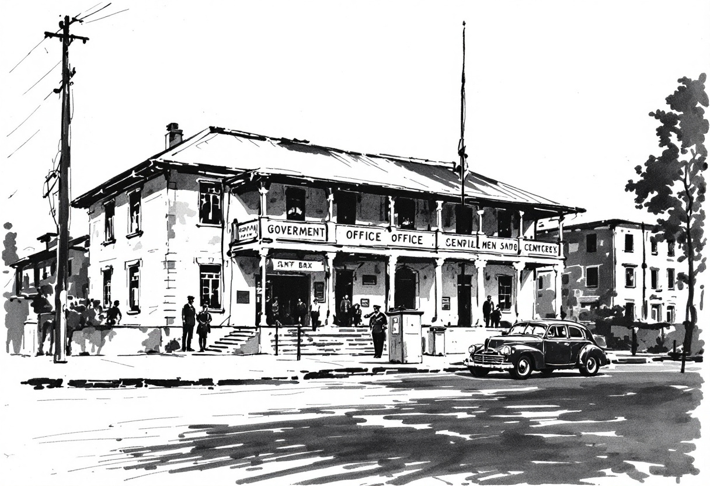
רישוםשלטון המנדט הבריטי רישום, לא תצלום.
נקודת המפנה היא "הספר הלבן" של 1939. הוא קבע שתי הגבלות שמכתיבות את כל מה שקורה בהמשך:
הגבלת עלייה — 75,000 יהודים בלבד יורשו להיכנס במשך חמש שנים, ואחריהן עלייה רק בהסכמה ערבית. ההגבלה נכנסה לתוקף בדיוק כשיהודי אירופה נזקקו למקום לברוח אליו.
הגבלת רכישת קרקע — תקנות 1940 חילקו את הארץ לאזורים. ברוב שטח הארץ, ובכלל זה הנגב כולו, נאסרה או הוגבלה מאוד העברת קרקע ליהודים.
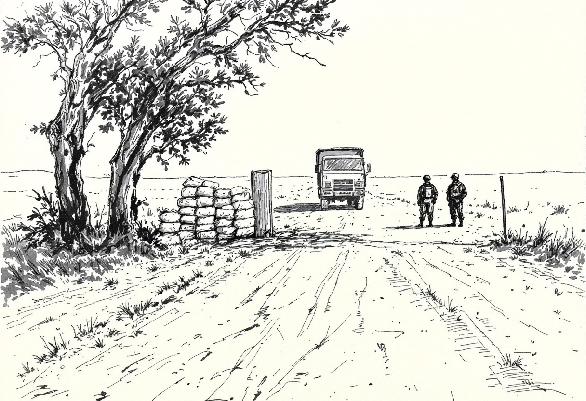
רישוםמחסום על הדרך רישום, לא תצלום.
המשמעות המעשית: הנגב, כמעט שליש משטח הארץ, היה אמור להישאר ריק מהתיישבות יהודית. כל יישוב שקם שם קם בניגוד לחוק, בלילה, בהסתר. זה הרקע להקמת רוחמה — ולזעם הבריטי כלפיה.
הצבא המחתרתי והסליקים
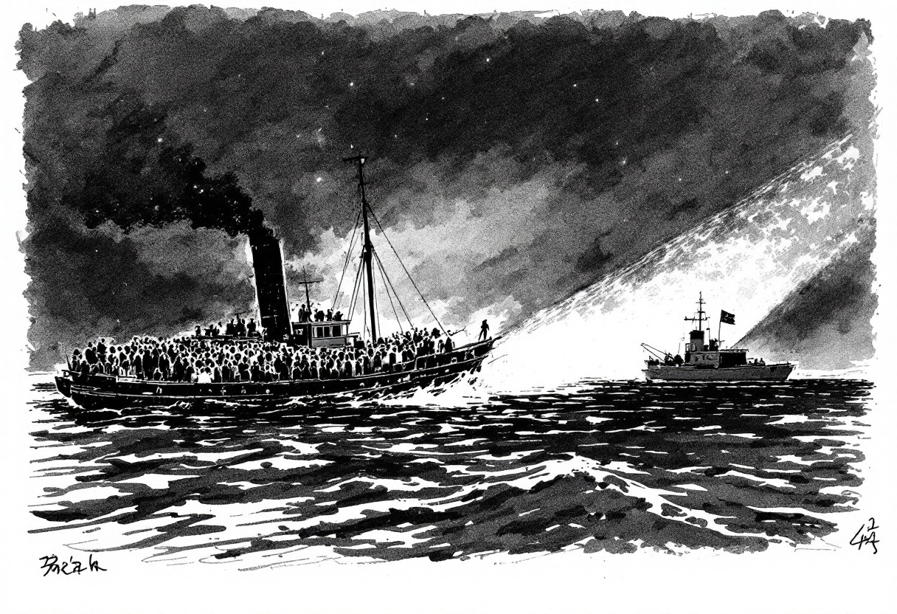
רישוםספינת מעפילים מול החוף רישום, לא תצלום.
ליישוב היהודי היה ארגון הגנה מחתרתי, "ההגנה", ובתוכו מ-1941 כוח מגויס וקבוע — הפלמ"ח. נשק היה בלתי חוקי, ולכן הוסתר. מקום המחבוא נקרא "סליק" — בור, קיר כפול, רצפה כפולה, מחסן תבואה, לעיתים מערכת שלמה מחוץ לגדר היישוב.
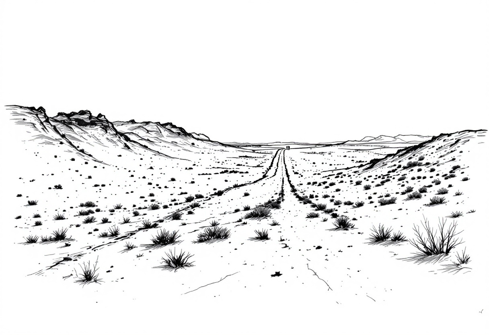
רישוםארץ הנגב רישום, לא תצלום.
וכאן נמצא ההיגיון של כל הסיפור: הקיבוץ היה גם משק חקלאי וגם מחסן נשק וגם בסיס אימונים. מבחינת השלטון הבריטי, קיבוץ לא היה כפר — הוא היה מתקן צבאי בהסוואה. מבחינת חברי הקיבוץ, החיפוש לא היה פעולה משטרתית — הוא היה פלישה לבית.
למה דווקא רוחמה?
רוחמה יושבת בין גבעות, בקצה דרך עפר, בלי כביש גישה. מי שרוצה לירות, לפוצץ ולהתאמן בלי שיראו אותו — זה המקום. בדרום הקיבוץ הוקם מחנה סמוי למגויסי הפלמ"ח ולמפקדי ההגנה, ובוואדיות שסביבו נערכו ניסויים בנשק ובחומרי נפץ. תושבים ערבים מהסביבה שמעו את הפיצוצים ודיווחו עליהם לצבא הבריטי. משם ואילך זה היה עניין של זמן.
קיץ 1946: הבריטים מאבדים סבלנות
אחרי המלחמה, כשמאות אלפי ניצולים תקועים במחנות עקורים באירופה ובריטניה מסרבת לפתוח את השערים, הארגונים היהודיים המחתרתיים מתאחדים ל"תנועת המרי העברי" ומבצעים סדרת פעולות נגד תשתיות בריטיות. התגובה הבריטית מהירה וכבדה:
29 ביוני 1946 — "השבת השחורה"מבצע אגתה: כ-17,000 חיילים ושוטרים, מעצר המנהיגות היהודית, חיפושים ביישובים. בקיבוץ יגור נמצא סליק גדול. יגור הופך לשם קוד — התקדים שכל קיבוץ יזכיר מעכשיו.
22 ביולי 1946פיצוץ האגף הדרומי של מלון המלך דוד בירושלים, מפקדת השלטון הבריטי. 91 הרוגים.
30 ביולי – 2 באוגוסט 1946מבצע כריש: כיתור וחיפוש בתל אביב.
סוף אוגוסט 1946תורו של הנגב.
חלק ב · המקוםהמשק שננטש ארבע פעמים
מוקרא בקול מסונתז, שנוצר מתיאור כתוב בלבד. אינו קולו של אדם ממשי.
רוחמה היא לא סיפור של קיבוץ אחד. זה סיפור של מקום שניסו ליישב שוב ושוב ושוב.
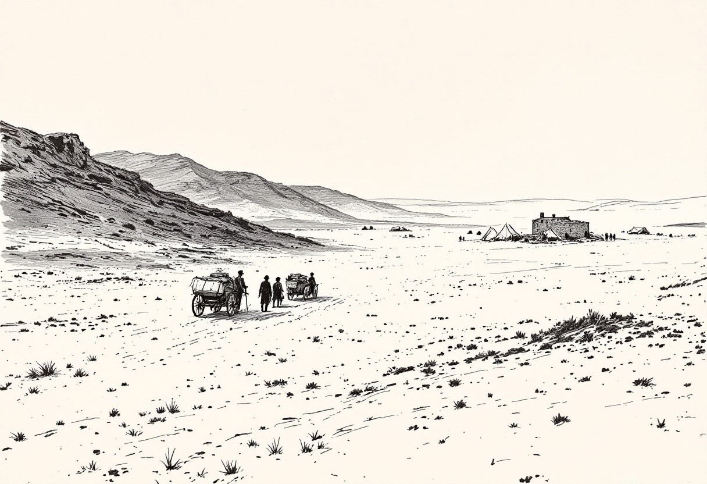
רישום1912 — החווה נוסדת. אגודת "שארית ישראל" של יהודי מוסקבה מגיעה לאדמות ריקות בצפון הנגב. רישום, לא תצלום.
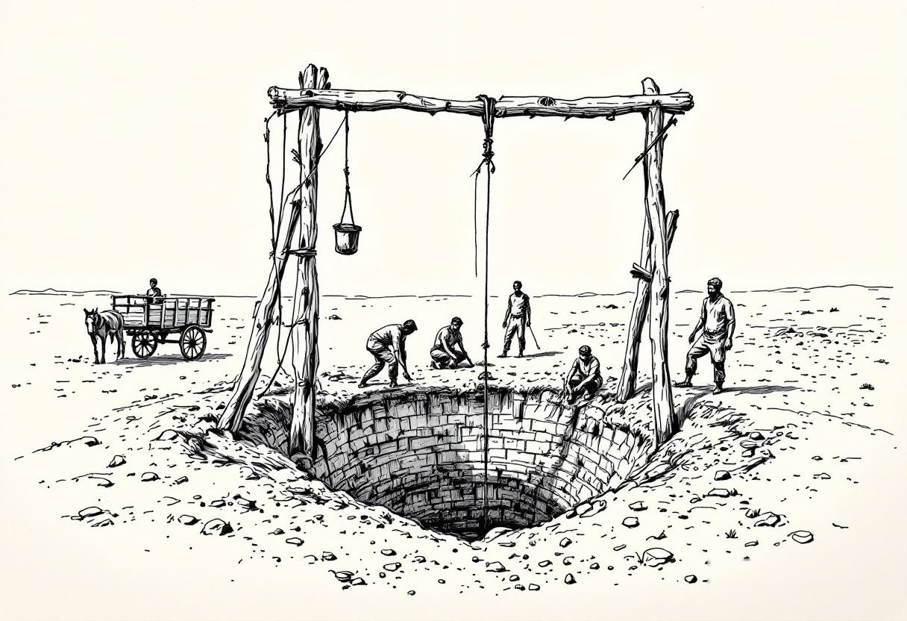
רישום1913 — הבאר. נחפרת ביד עד עומק 38 מטרים. היא הסיבה שאפשר בכלל להישאר כאן. רישום, לא תצלום.
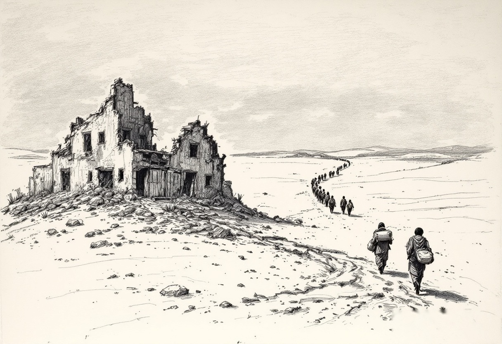
רישום1917 — נטישה ראשונה. קרבות מלחמת העולם הראשונה מחריבים את החווה, והמתיישבים מגורשים. רישום, לא תצלום.
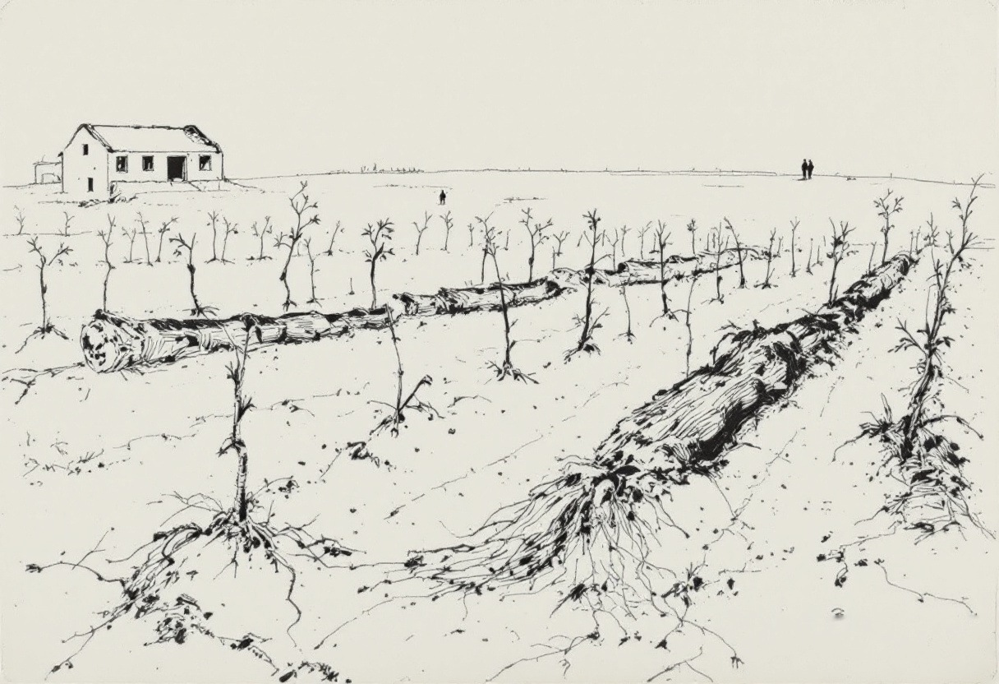
רישום1936 — הפרדסים נעקרים. במרד הערבי הגדול נהרסים הבתים והעצים נעקרים. נטישה שלישית. רישום, לא תצלום.
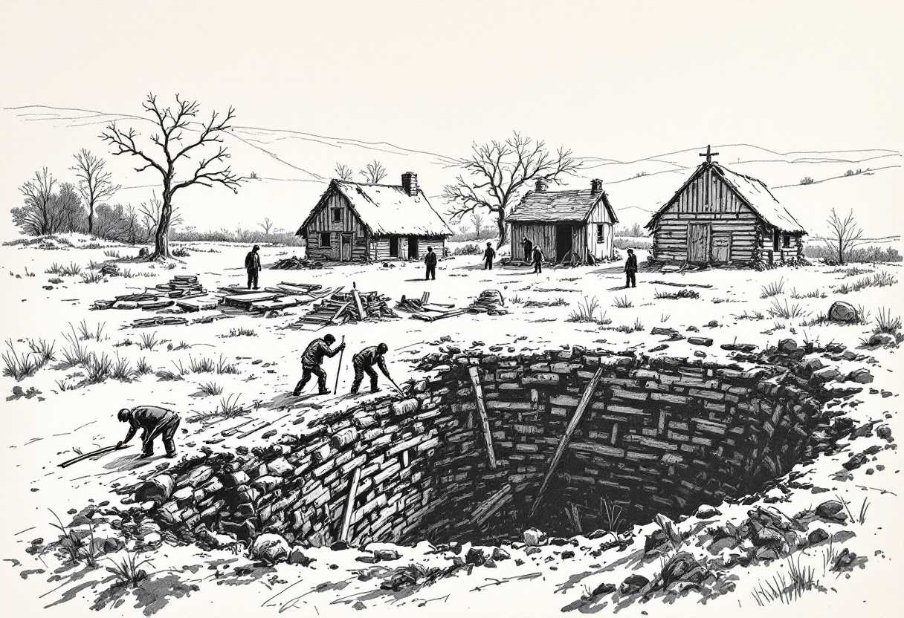
רישוםדצמבר 1943 — חוזרים. קבוצה ראשונה מ"העמל" יורדת לאדמות, פותחת מחדש את הבאר ומקימה צריפים. רישום, לא תצלום.
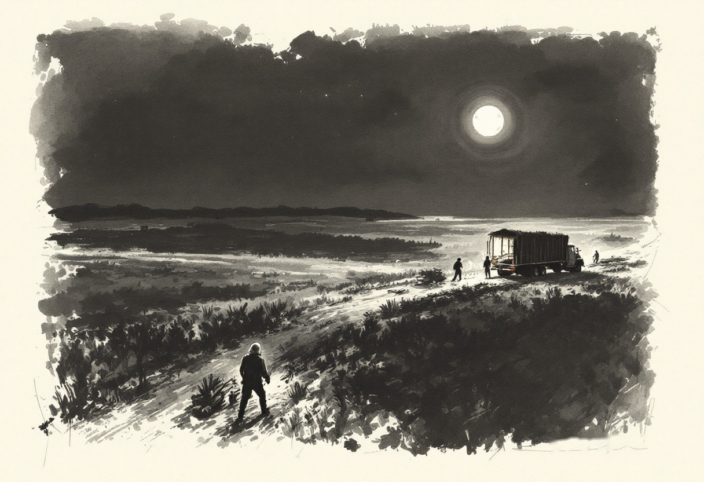
רישום29 במרץ 1944 — בלילה. החוק הבריטי אסר התיישבות יהודית בנגב, ולכן הכול נעשה בחשכה. רישום, לא תצלום.
1911–1913אגודת "שארית ישראל" של יהודי מוסקבה רוכשת כ-5,000 דונם ליד הכפר הערבי ג'מאמה ומקימה את חוות רוחמה — ההתיישבות היהודית המודרנית הראשונה באדמות הנגב. השם נבחר על שם נבואת הושע: "וְרִחַמְתִּי אֶת־לֹא רֻחָמָה". ב-1913 נחפרת הבאר.
1917קרבות מלחמת העולם הראשונה מחריבים את החווה. המתיישבים מגורשים בידי השלטון העות'מאני.
1929ניסיון שיקום, ואז מאורעות תרפ"ט — ונטישה שנייה.
1932–1936חברת "גן-שלמה" רוכשת חלק מהאדמות ומביאה פועלים עברים לנטוע פרדסים. במרד הערבי הגדול ב-1936 הבתים נהרסים והפרדסים נעקרים. נטישה שלישית.
1936באותה שנה עצמה, בקריית חיים, מוקם קיבוץ "העמל" — גרעיני השומר הצעיר מפולין ומרומניה. הם חיים במחנה זמני ומתפרנסים מעבודות חוץ בנמל חיפה.
2 בדצמבר 1943קבוצה ראשונה מ"העמל" יורדת לאדמות רוחמה. פותחים מחדש את הבאר, מקימים צריפים.
29 במרץ 1944יום העלייה לקרקע. מכיוון שהחוק הבריטי אסר התיישבות יהודית בנגב, כל המבצע נעשה בסתר: משאיות בדרכי עפר סמויות, באישון לילה, וטקס בערב.
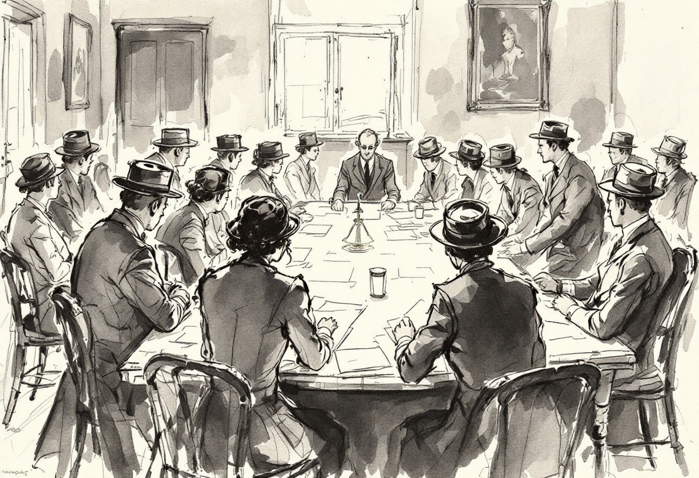
רישוםאגודת "שארית ישראל", מוסקבה רישום, לא תצלום.
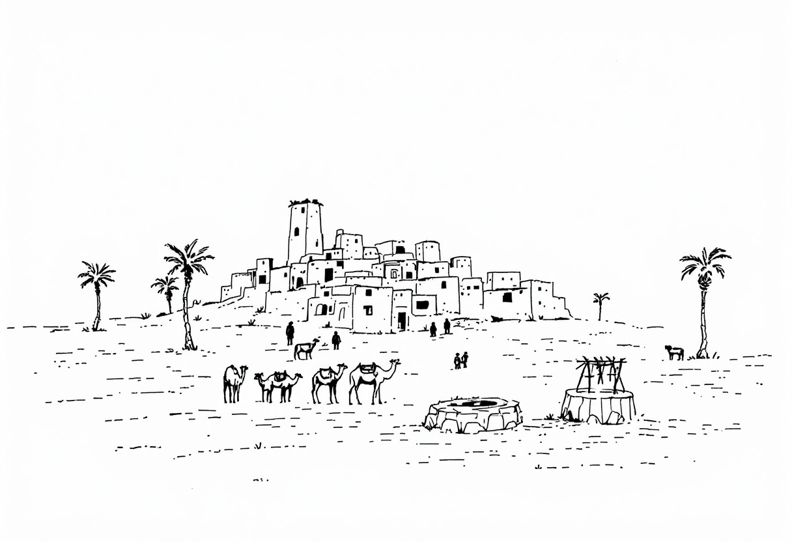
רישוםג'מאמה, הכפר השכן רישום, לא תצלום.
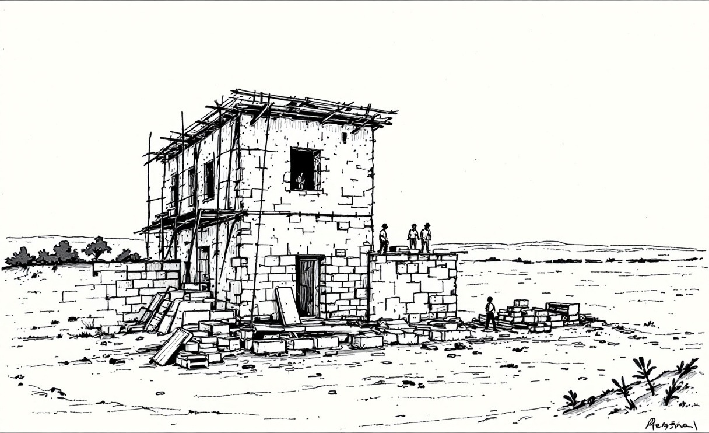
רישוםהבית הראשון רישום, לא תצלום.
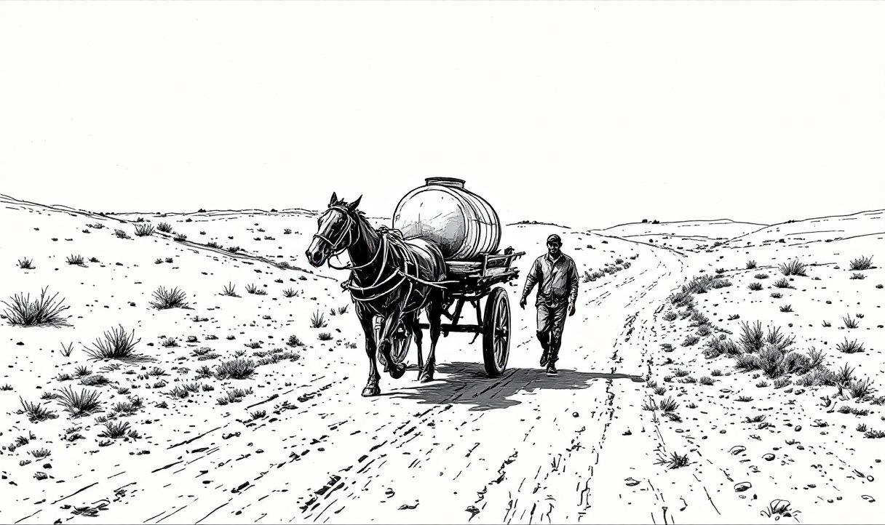
רישוםעגלת המים רישום, לא תצלום.
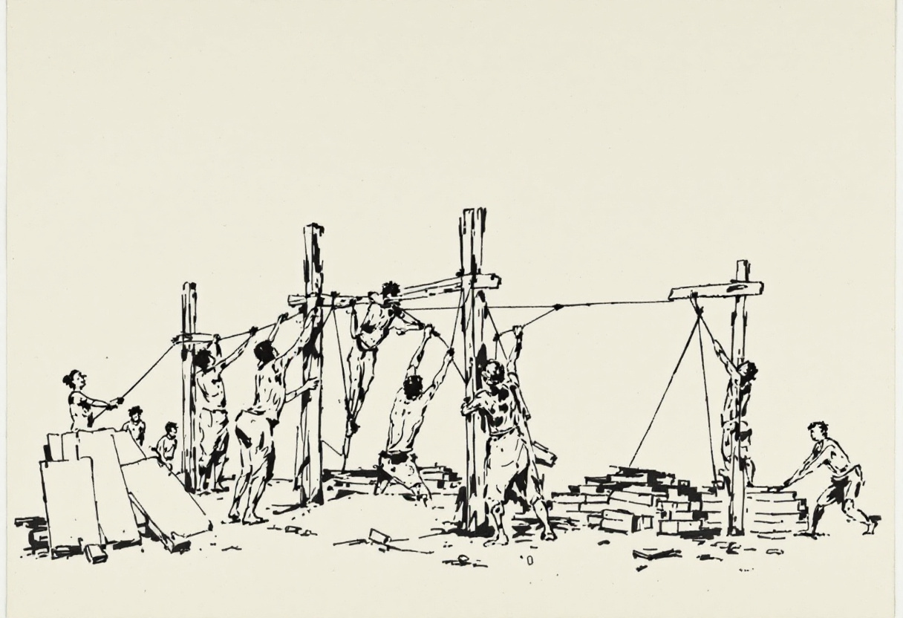
רישוםמקימים צריף רישום, לא תצלום.
כשהצבא הבריטי מגיע באוגוסט 1946, הקיבוץ הזה קיים שנתיים וחמישה חודשים. אין כביש גישה. אין קו מים — הבאר לא מספיקה, ומקציבים מקלחות וממחזרים מים להשקיה. יש נגרייה, מסגרייה, מוסך, ובית מלאכה לתיקון עגלות סוסים על הכביש הראשי. זה כל הרכוש שקיים.
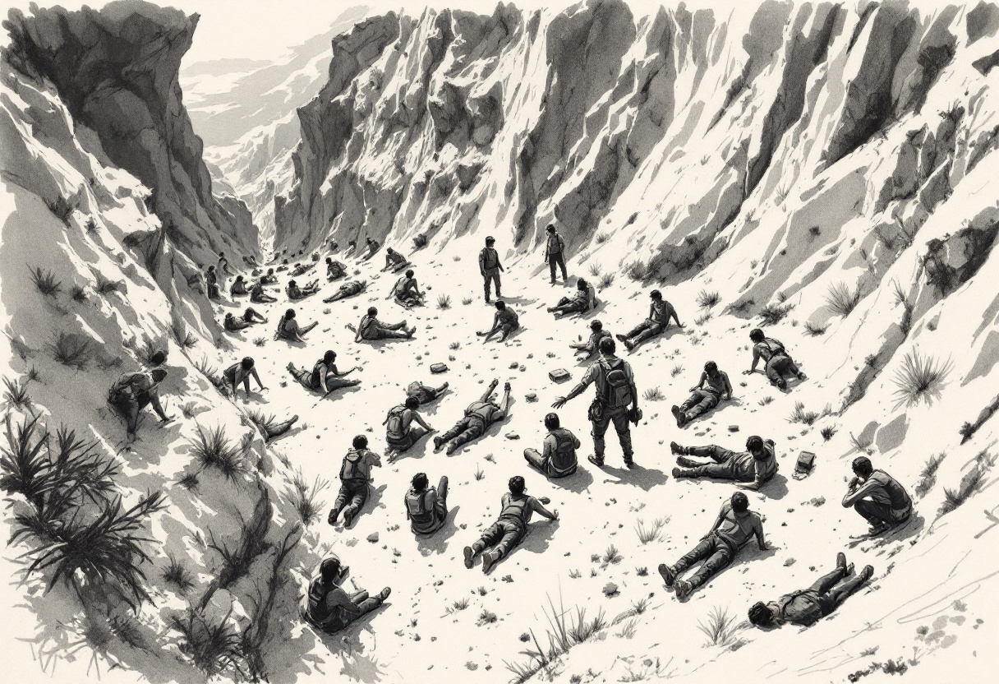
רישוםאימונים בוואדיות. במשך שנתיים התאמנו כאן בסתר. זו הסיבה שהבריטים הגיעו. רישום, לא תצלום.
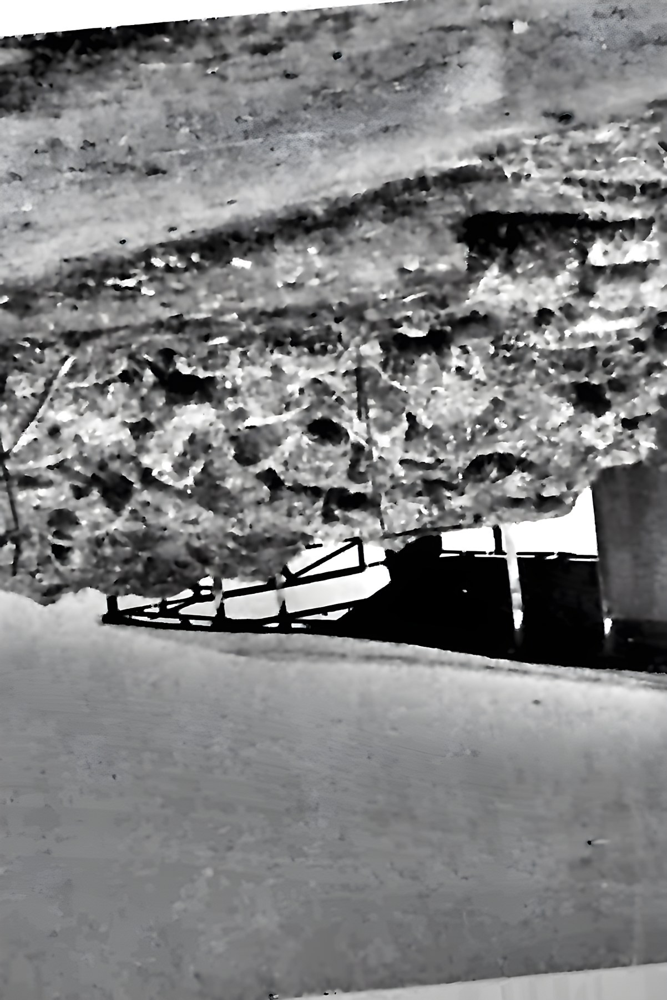
מבנה שגגו הוסר. הקורות נראות בבירור מול האור — כיסוי הגג הוסר כולו, וערימת חומר נשפכה מתחתיו. ארכיון קיבוץ רוחמה, 1946, שוחזר 2026. כיוון התצלום תוקן באוגוסט 2026: עד אז הוצג הפוך, ותואר בטעות כנוף.
חלק ג · שישה ימיםמה קרה, יום אחר יום
מוקרא בקול מסונתז, שנוצר מתיאור כתוב בלבד. אינו קולו של אדם ממשי.
לפני כן — 29 ביוני 1946
אוגוסט לא היה הפעם הראשונה. חודשיים קודם לכן, ב-29 ביוני 1946, ערכו הבריטים את מבצע "אגתה" — השבת השחורה: פשיטה בו-זמנית על עשרות יישובים ברחבי הארץ, חיפושי נשק, ומעצר של אלפי אנשים. גם רוחמה נפשטה באותו יום.
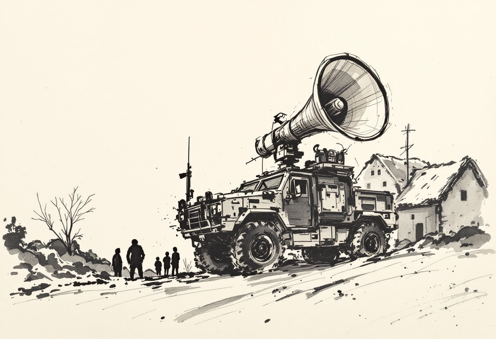
רישוםההכרזה ברמקול רישום, לא תצלום.
העדות לכך היא תצלום אחד מארכיון הקיבוץ, שכיתובו אומר: ילדי רוחמה, לאחר החיפוש שנערך בבית הילדים שלהם. התאריך רשום — 29 ביוני 1946.
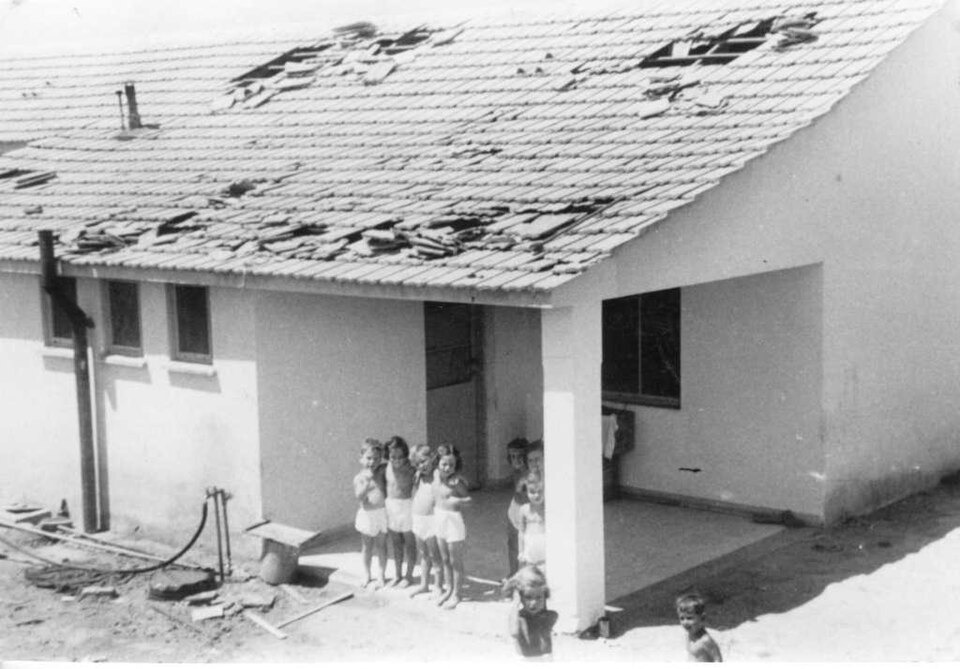
בית הילדים, 29 ביוני 1946. הגג פרוץ לכל אורכו — הרעפים נשברו והוסרו בכתמים, כדי לחפש נשק מעל התקרה. תשעה או עשרה ילדים קטנים עומדים מתחת לגג, בבגדים תחתונים, בשעת בוקר. משמאל, על הקרקע: קרשים, צינור ולוחות שנעקרו. ארכיון קיבוץ רוחמה, דרך אוניברסיטת הרווארד. נחלת הכלל. הצלם אינו ידוע.
זה משנה את קריאת המצור של אוגוסט. כשהחיילים הגיעו בפעם השנייה, החברים כבר ידעו בדיוק מה עומד לקרות — וכבר הספיקו להוציא את הנשק אל מחוץ לגדר. ההסבר לכך ששישה ימי חיפוש לא העלו דבר מתחיל כאן, ביוני.
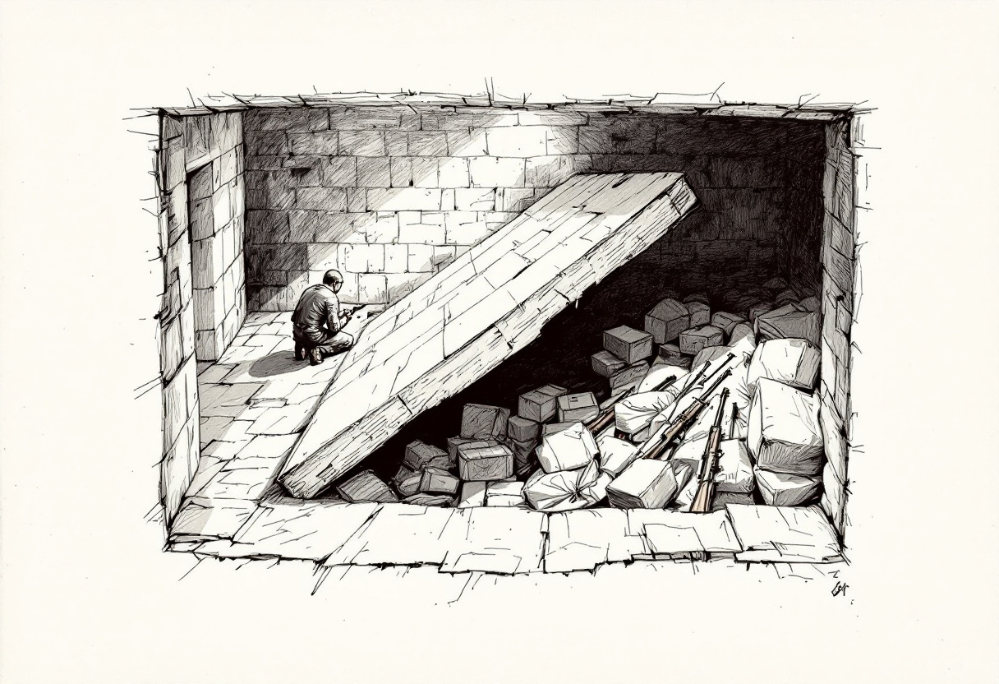
רישוםסליק. מחבוא נשק מתחת לרצפה — בדיוק מה שחיפשו שישה ימים. ברוחמה לא מצאו אף אחד. רישום, לא תצלום.
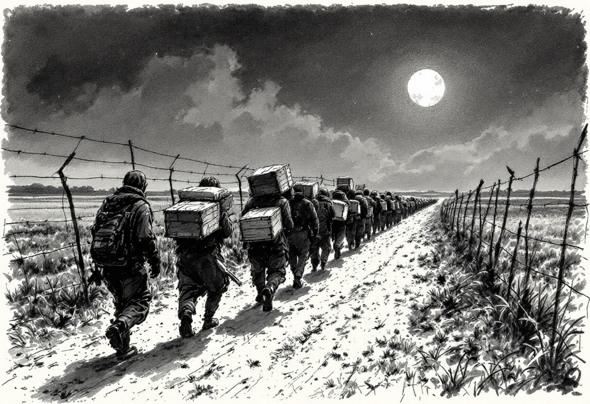
רישוםמוציאים את הנשק. אחרי החיפוש של יוני ידעו מה צפוי. הנשק הוצא אל מחוץ לגדר עוד לפני שהחיילים הגיעו. רישום, לא תצלום.
יום ראשון — המצור נסגר
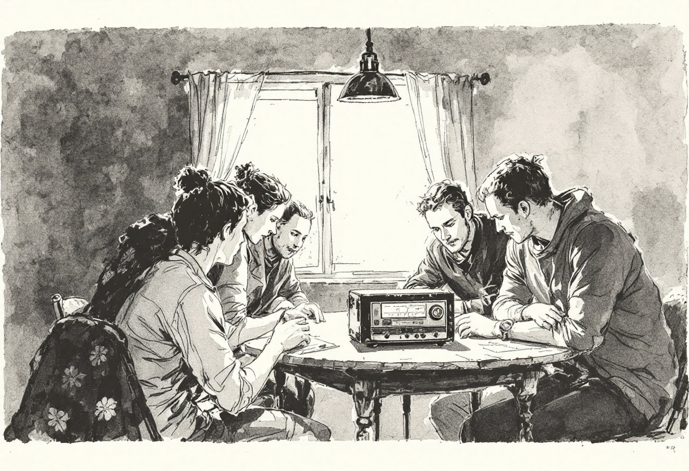
רישוםרדיו ירושלים מודיע על המבצע רישום, לא תצלום.
ב-28 באוגוסט 1946 הצבא הבריטי מטיל טבעת סגר על שני קיבוצים בנגב המערבי: רוחמה ודורות. אין יוצא ואין נכנס. הכוח מוערך בכ-אלפיים חיילים, מהדיוויזיה המוטסת השישית — בארץ קראו להם "הכלניות", על שם הכומתות האדומות. הלוח בארכיון הקיבוץ מציין שלוש יחידות שהשתתפו, ומספריהן: 68, 941, 67. רדיו ירושלים מודיע על המבצע באותו היום עצמו.
הכותרת בעיתון באותם ימים אמרה את זה יבש: "חיל כבד שם מצור על המשקים רוחמה ודורות. רשמית: הפעולות מכוונות לחיפוש נשק."
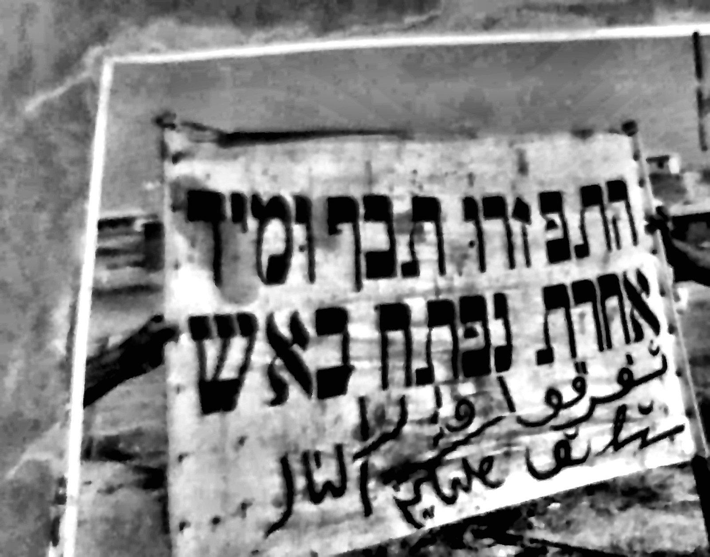
השלט. בעברית: "התפזרו תכף ומיד — אחרת נפתח באש", ומתחת אותו נוסח בערבית. שלט אזהרה שהוצב ביישוב הנצור. פרט מוגדל מתצלום בארכיון הקיבוץ.
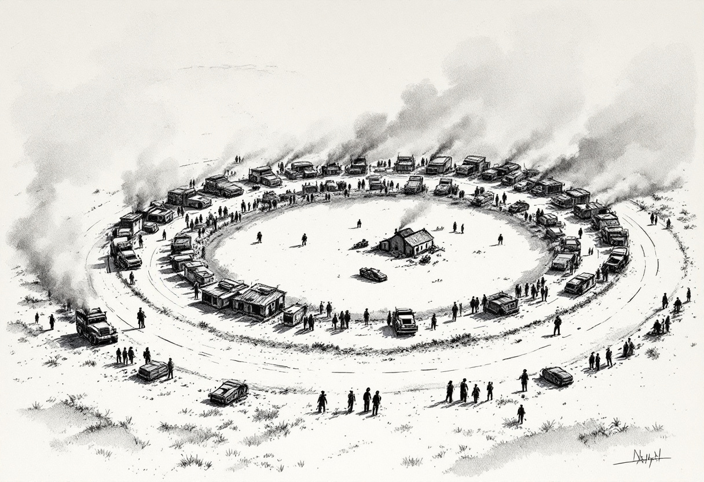
רישום28 באוגוסט — הטבעת נסגרת. כאלפיים חיילים מקיפים שני קיבוצים. אין יוצא ואין נכנס. רישום, לא תצלום.
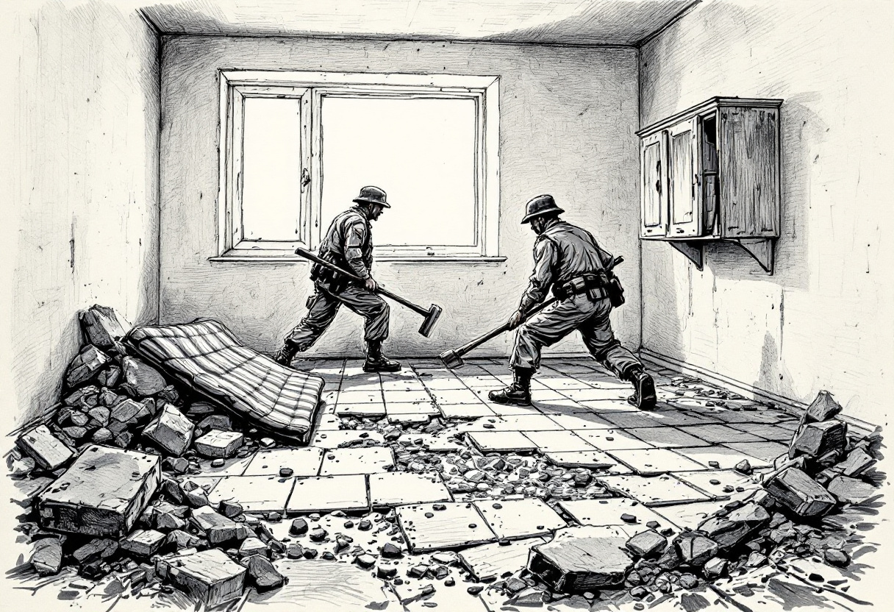
רישוםשוברים את הרצפה. הרצפות נשברו, הקרקע מתחתן נחפרה, וכל מזרן נקרע. רישום, לא תצלום.
ימים שני עד רביעי — השיטה
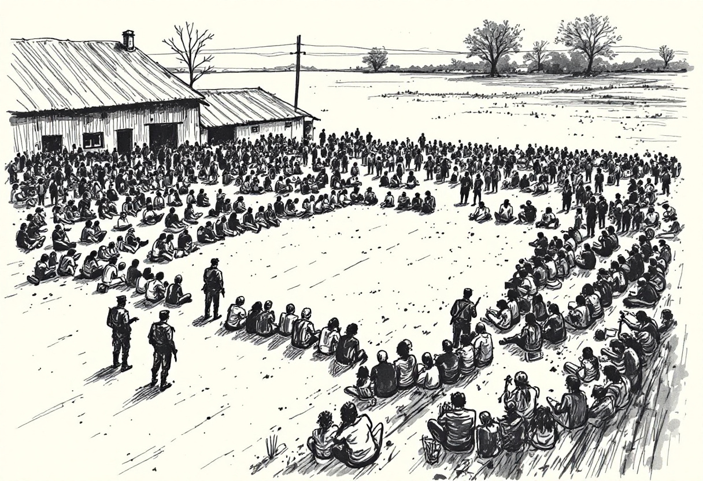
רישוםמכונסים בחצר, תחת שמירה רישום, לא תצלום.
חיפוש נשק בריטי ביישוב לא היה חיטוט. הייתה לו שיטה, והיא מתועדת היטב בתצלומים:
הרצפות. מנפצים את הריצוף בכל מבנה, כי מתחתיו יכול להיות בור.
הקירות. חופרים תעלה לאורך יסודות המבנה מבחוץ, כי סליק אופייני נחפר צמוד לקיר.
המזרנים. קורעים כל מזרן וכל כרית, כי אפשר לתפור בפנים אקדח.
המחסנים. שופכים את התכולה על הרצפה ומפזרים אותה.
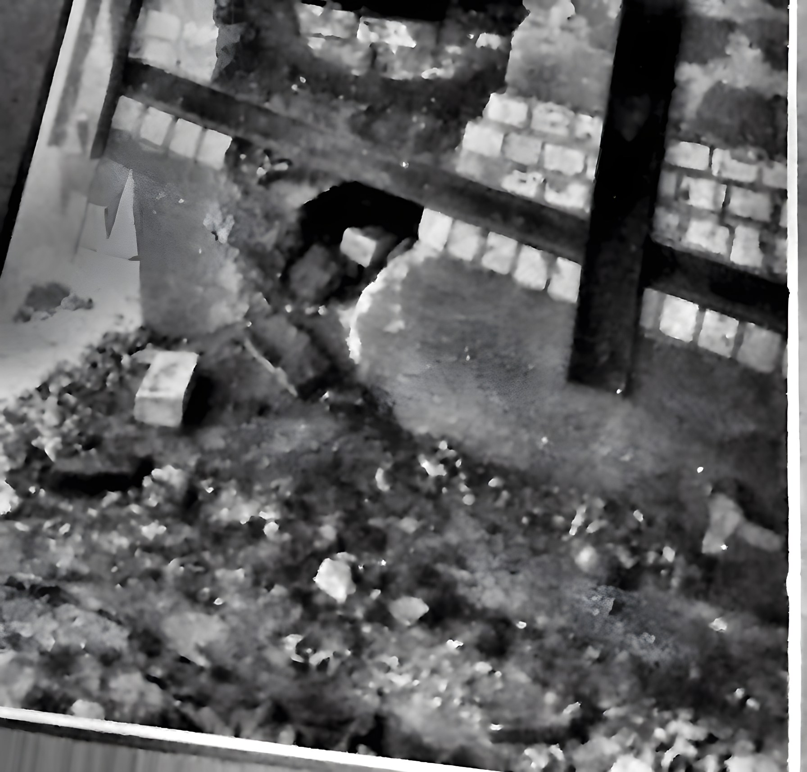
הרצפה והקיר. הריצוף נשבר, האדמה מתחתיו נחפרה, קורת התמך נחשפה.
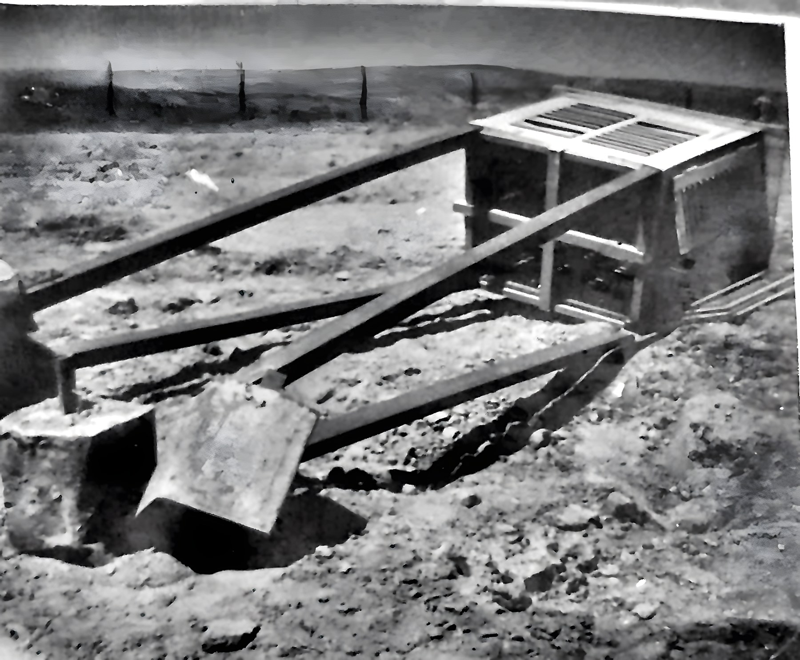
המבנה כולו. מתקן שהורם מהיסודות והאדמה תחתיו נחפרה. לא נמצא דבר.
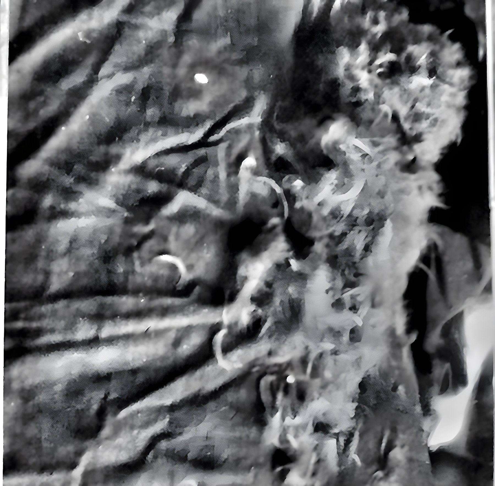
המזרן. נקרע ורוקן. זו הפעולה שחוזרת בכל תצלומי הפנים.
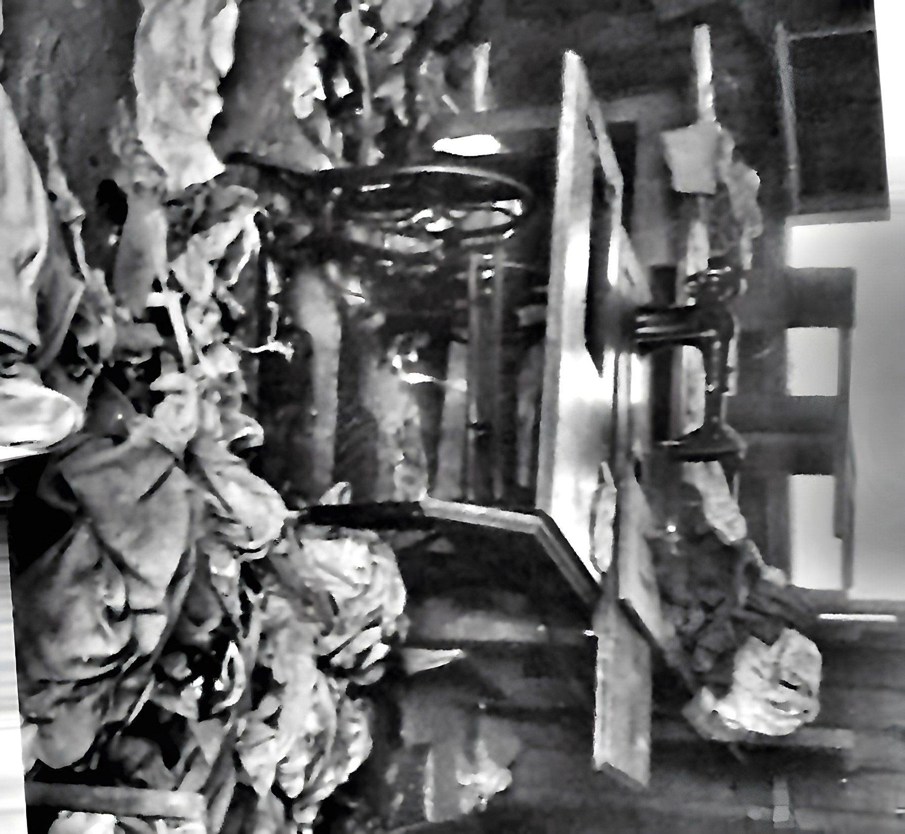
חדר מגורים, אחרי. ריהוט הפוך, מצעים על הרצפה, ניירות מפוזרים.
"למה הרסתם את תנור האפייה? האין יודעים הקצינים כי אי אפשר להסתיר נשק בתנור מוסק?"
מתוך כרטיסי הכיתוב הכחולים שכתבו חברי הקיבוץ, על לוח התערוכה בארכיון
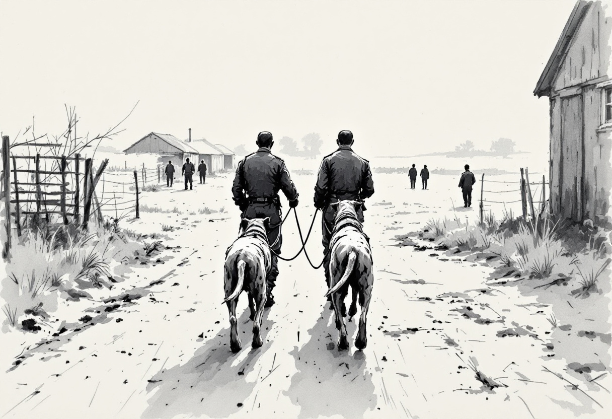
רישוםכלבי הגישוש. ימים ספורים לפני המצור פרסמה העיתונות תצלומים של כלבי גישוש שהביאו הבריטים לאיתור הסליקים. אלה הכלבים שאלתרמן ענה להם. רישום, לא תצלום.
30 באוגוסט — אלתרמן עונה
ביום השלישי למצור, בעוד החיילים עדיין בתוך הקיבוץ, פרסם נתן אלתרמן ב"דבר" את טורו "מרשימותיו של כלב" — אחד מטורי הטור השביעי שלו. ימים ספורים קודם לכן פרסמה העיתונות תצלומים של כלבי גישוש שהביאו הבריטים לארץ כדי לאתר את סליקי ההגנה. אלתרמן השיב להם מפיו של אחד הכלבים.
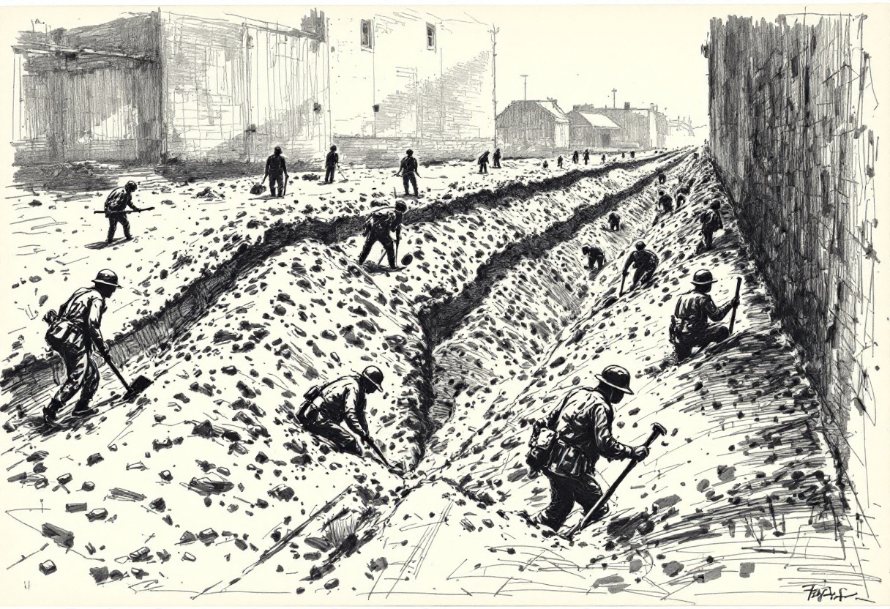
רישוםתעלות לאורך הקירות רישום, לא תצלום.
הטור הפך לאחד המפורסמים שכתב. המשורר חיים גורי, שהיה אז בן 23, ציטט אותו כמעט בכל הזדמנות עד סוף ימיו.
הקראה בקולו של חיים גורי
"חבר הפלמ״ח והמשורר חיים גורי מספר על ימי המאבק בבריטים ומצטט מתוך מרשימותיו של כלב של אלתרמן" — בית הפלמ״ח. הציטוט מתחיל ב-0:39.
האירוע שמאחורי הטור
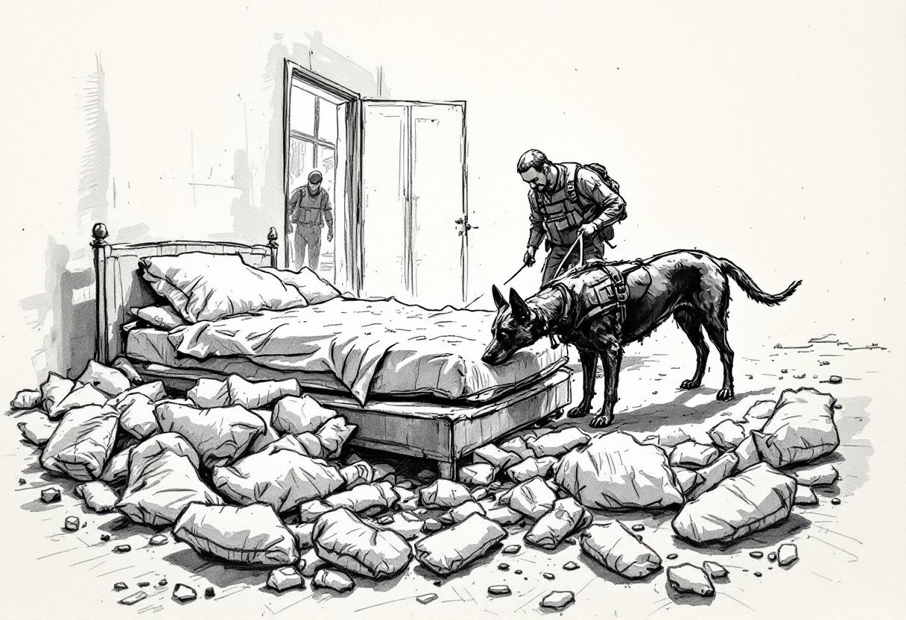
רישוםהכלבים בחדרים רישום, לא תצלום.
"האירוע שמאחורי מרשימותיו של כלב" — מתוך אתר נתן אלתרמן, ערוץ המורשת הרשמי של המשורר.
הרס רהיטים אפשר לצלם. את מה שקרה למשק — פחות. כרטיסי הכיתוב של החברים מפרטים:
"צריף הקומונה ותכולתו הושחתו. ערימת בגדים מזוהמים, מכונות התפירה, ציוד, כלים, נוצות, חיתולי ילדים — הרכוש המועט שהיה לנו אינו יותר לשימוש."
כרטיס כיתוב, ארכיון קיבוץ רוחמה
ועוד: מתבנים הועלו באש. זבל כימי עורבב במזון. גרעיני הזריעה נפסלו. בעלי החיים פוזרו. חדר האוכל והמטבח הושחתו. לקיבוץ בן שנתיים בנגב, שכל קיומו תלוי בזרעים של העונה הבאה ובמחסן המזון של החורף, זה לא נזק לרכוש — זה איום קיומי. באותם ימים גם נחסמה הכנסת אספקה ליישובים הנצורים.
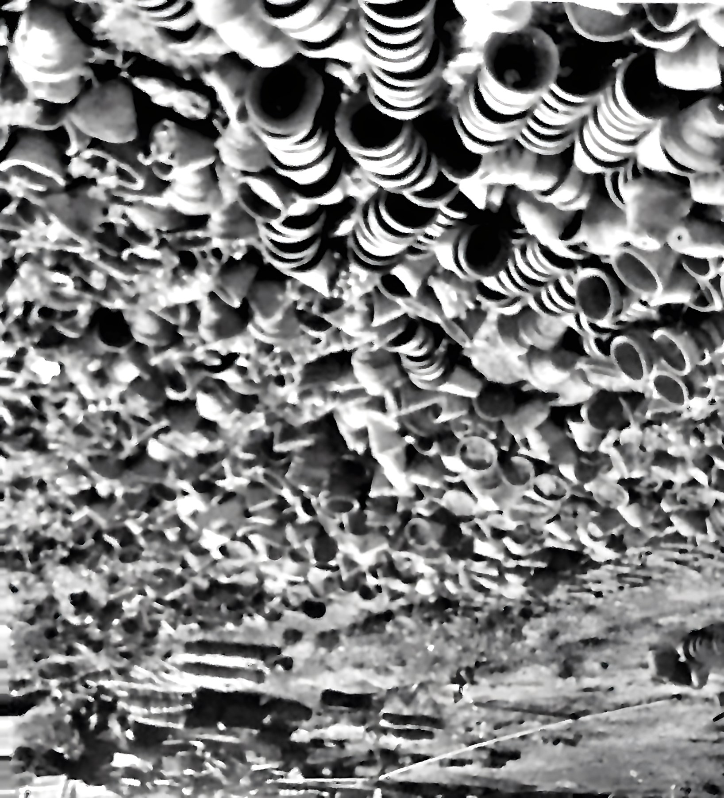
כלי האוכל של חדר האוכל. אולי התצלום החזק בכל האוסף: אלפי צלחות וספלים, מנופצים ומושלכים בערימה אחת. חדר אוכל של קיבוץ הוא לא מטבח — הוא המקום שבו הקהילה קיימת. ארכיון קיבוץ רוחמה, 1946.
יום חמישי — זה מגיע לעמוד הראשון
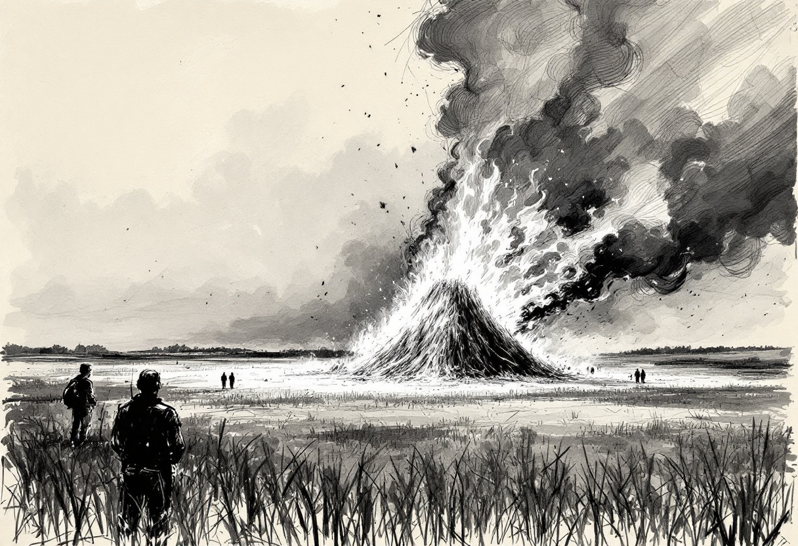
רישוםהחציר בוער רישום, לא תצלום.
ביום החמישי למצור, עיתון "משמר" — היומון של השומר הצעיר, לימים "על המשמר" — פותח את העמוד הראשון בכותרת: "הרס והתעללות ביישובים הנצורים — יום חמישי למצור ולחיפושים ברוחמה ודורות." באותו עמוד מצוטט קצין בריטי בשם וילסון שמכריז כי רוחמה היא "מרכז הנשק הגדול אחרי יגור".
ההשוואה ליגור לא הייתה מקרית. ביגור, חודשיים קודם לכן, החיפוש הבריטי הצליח. הציטוט הזה הוא הצדקה מראש למה שנעשה ברוחמה — ובדיעבד, הוא גם התיעוד הטוב ביותר לכך שהחיפוש נכשל.
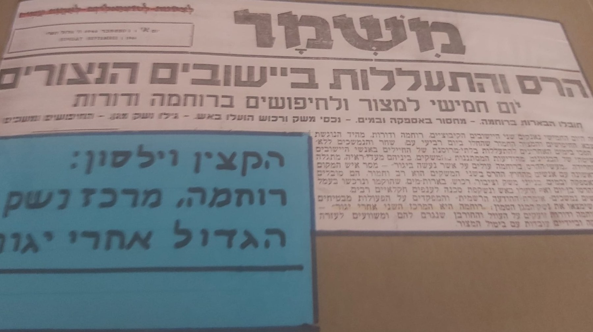
"משמר", יום חמישי למצור. העיתונות העברית סיקרה את המצור יום־יום.
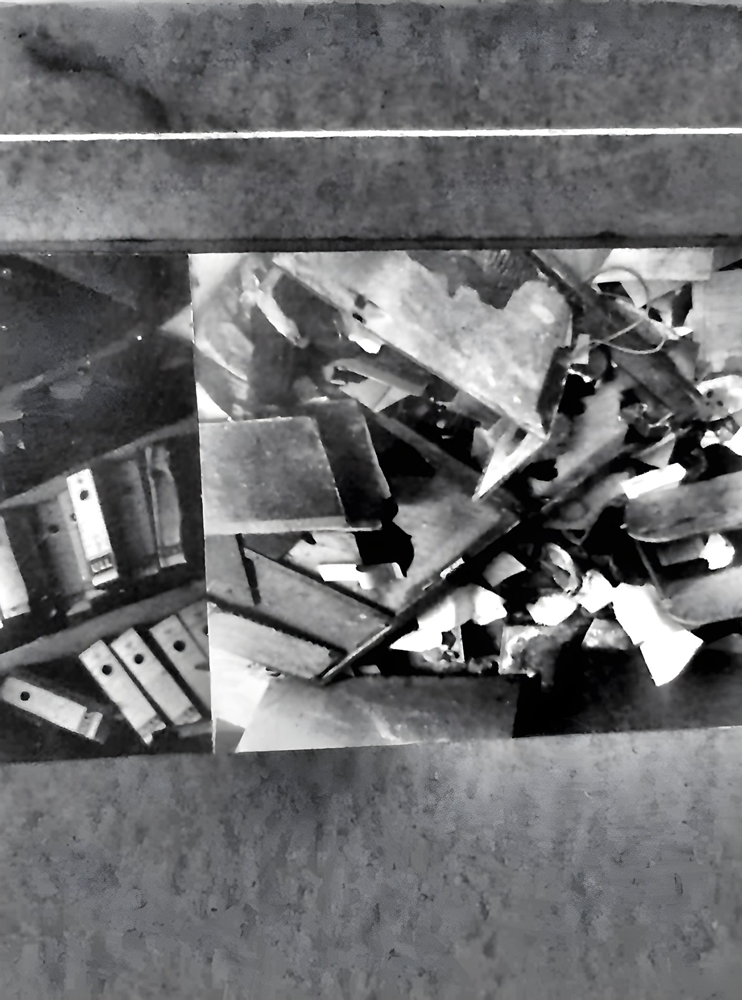
תיקי המשרד. ארכיון הקיבוץ מתעד את הרגע שבו הוא עצמו נשפך על הרצפה.
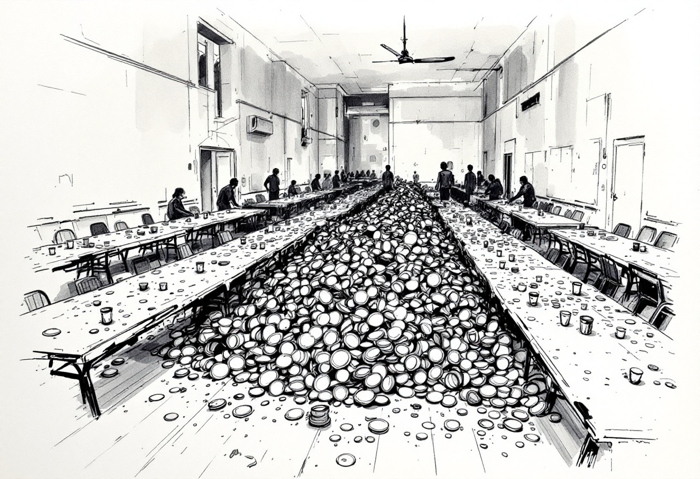
רישוםחדר האוכל רישום, לא תצלום.
במקביל, גולדה מאירסון (לימים גולדה מאיר), שכיהנה כראש המחלקה המדינית של הסוכנות היהודית אחרי מעצר המנהיגות בשבת השחורה, אומרת לעיתונאים זרים במסיבת עיתונאים שהחיפושים הם "הזמנה להרוס את רוחמה בפעם השלישית" — רמז ישיר לשתי הנטישות הקודמות של המקום.
הלוח בכיתה
בין התצלומים בארכיון יש אחד שאינו מתעד נזק לרכוש. על לוח כיתה, בגיר, כתוב באנגלית: YEHUDI SWINE — "חזיר יהודי".
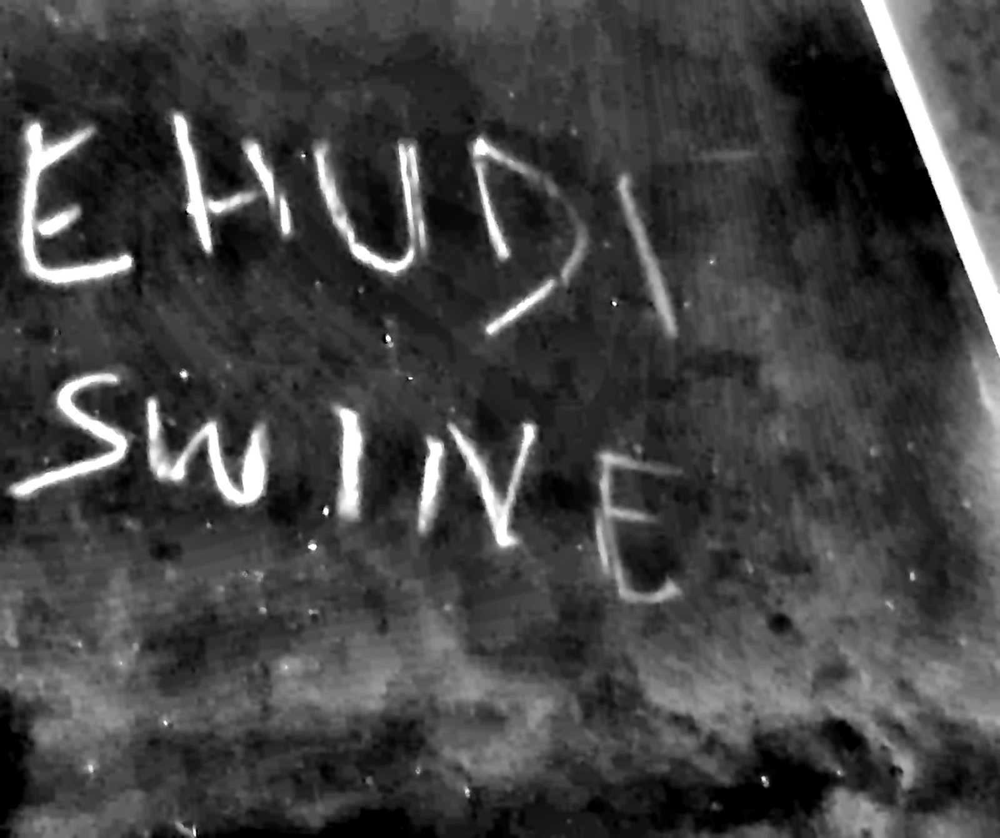
הלוח. הקיבוץ צילם את זה ושמר את זה בארכיון — לא כזוועה אלא כראיה: כך התנהל החיפוש. פרט מוגדל, ארכיון קיבוץ רוחמה, 1946.
יום שישי — לא נמצא דבר
אחרי כשישה ימים הכוח מסיר את המצור ועוזב. לא נמצא נשק.
הסיבה פשוטה: כשנודע לחברי הקיבוץ וללוחמים שהבריטים מתכוונים להיכנס, הם הקפידו להחביא את הנשק במקומות נסתרים ורחוקים משטח הקיבוץ. הצבא חיפש בתוך הגדר. הסליקים היו בחוץ.
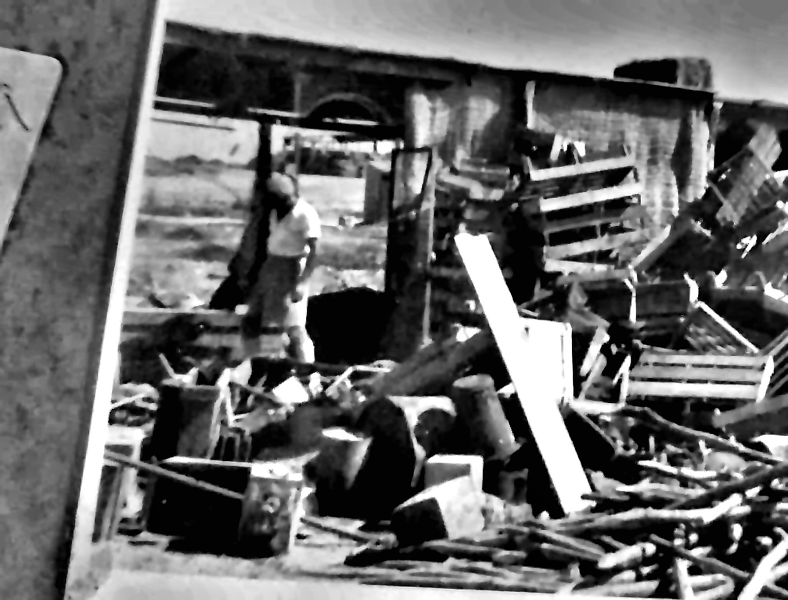
החצר, אחרי. מכונות, קורות, ארגזים וכלים בערימה אחת. משמאל עומד אחד מחברי המשק ומסתכל. ארכיון קיבוץ רוחמה, 1946.
חלק ד · האנשיםארבעת האנשים שבתצלומים
מוקרא בקול מסונתז, שנוצר מתיאור כתוב בלבד. אינו קולו של אדם ממשי.
שימו לב למשהו מוזר באוסף הזה: כמעט אין בו בני אדם. מתוך 27 תצלומים היסטוריים שהצלחנו לחלץ מלוח התערוכה, בארבעה בלבד נראית דמות אנושית.
זה לא מקרה. התצלומים צולמו כתיעוד נזק — כמו תיק תביעה. מי שצילם רצה להראות מה נשבר, לא מי בכה. וזה בדיוק מה שהופך את ארבעת האנשים האלה ליקרים כל כך.
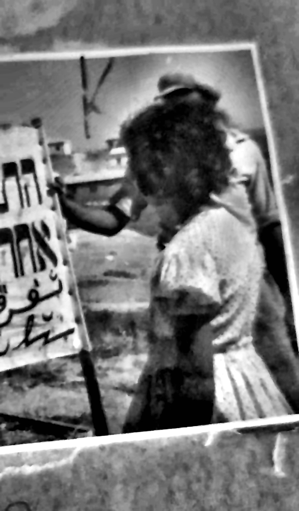
האישה ליד השלט. צעירה בשמלה מודפסת, יד מושטת אל השלט הבריטי שמאיים לפתוח באש. היא לא בורחת ולא מפגינה — היא קוראת. זהו התצלום היחיד באוסף שבו אדם ושלטון נמצאים באותו פריים.
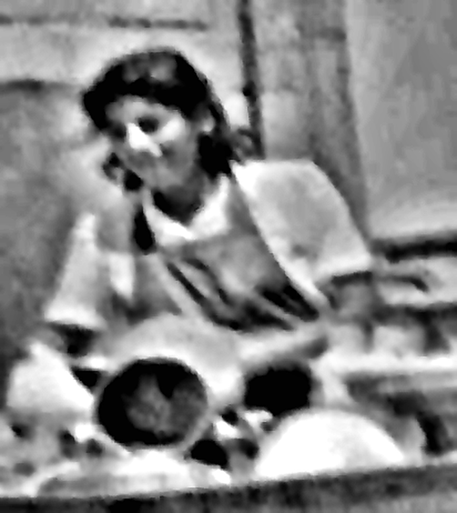
האישה במטבח. בסינר, מאחורי שולחן עמוס בכלים ובקערות. זו כבר לא תמונת הרס — זו תמונת שיקום. מישהי התחילה לסדר.
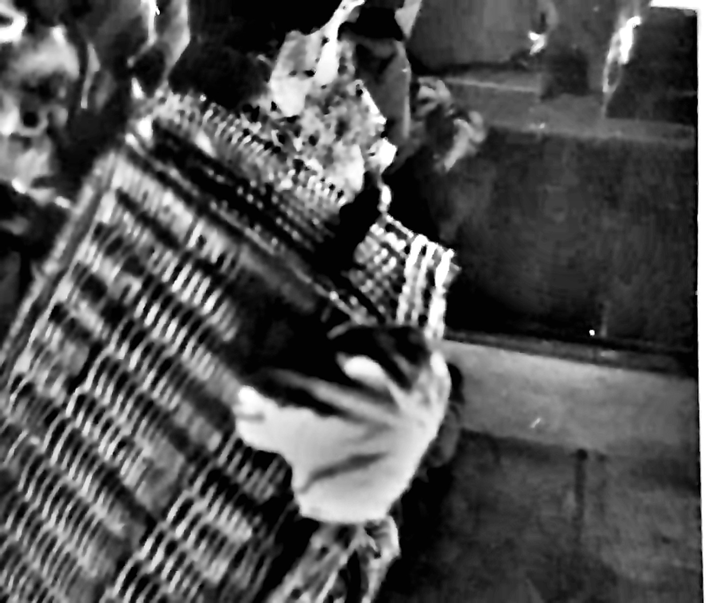
מוציאים את זה החוצה. אדם נושא מזרן קרוע או סל קלוע החוצה מן החדר. הידיים בפריים הזה הן העדות הכי מוחשית לכך שמישהו נאלץ לנקות את זה.
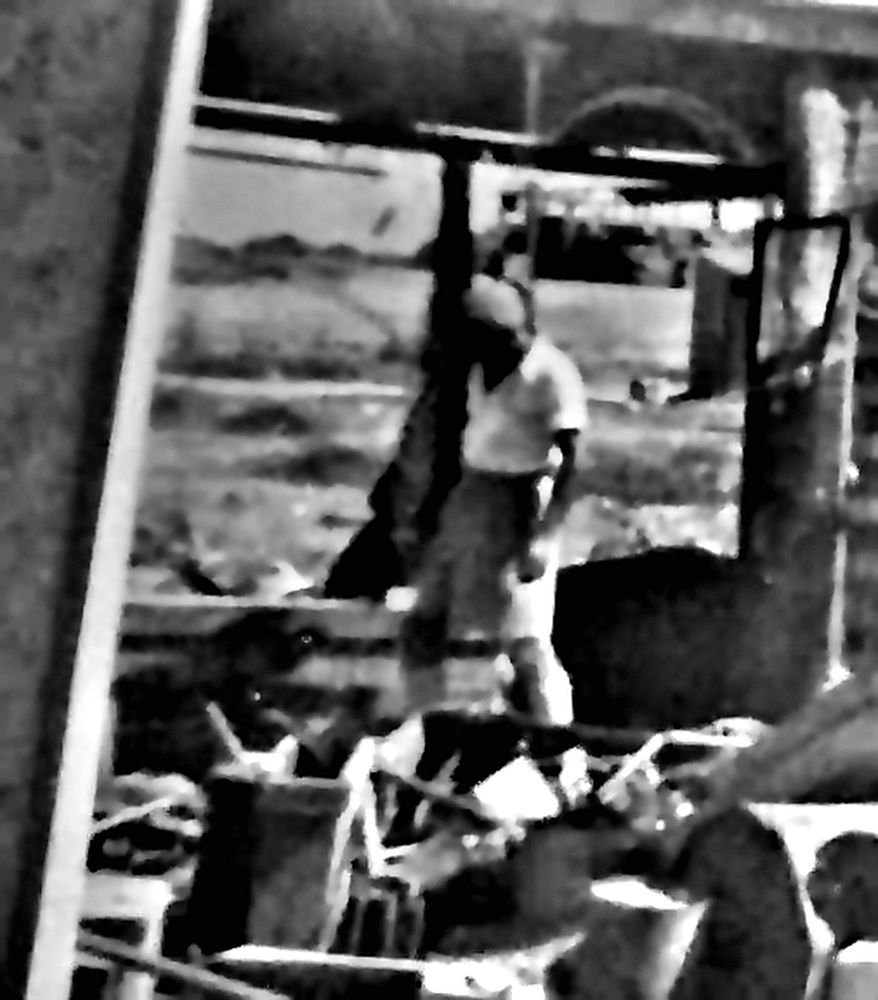
הגבר בחצר. בחולצה ובמכנסיים קצרים, עומד בשוליים ומביט על הערימה. אין לנו את שמו. מישהו קורא את זה כנראה יודע.
קריאה פתוחה
אין לנו את שמותיהם של ארבעת האנשים האלה. יש היום אנשים חיים שיודעים מי הם. אם אתם מכירים מישהו מקיבוץ רוחמה או ממשפחות החברים — זו השאלה הכי חשובה לשאול לפני יום השנה ה-80.
חלק ה · אחר כךמה קרה בהמשך
מוקרא בקול מסונתז, שנוצר מתיאור כתוב בלבד. אינו קולו של אדם ממשי.
השיקום ארך חודשים. מבנים רבים נהרסו, רכוש נשדד, תשתיות נבנו מחדש. אבל החברים החליטו להיאחז בנקודה.
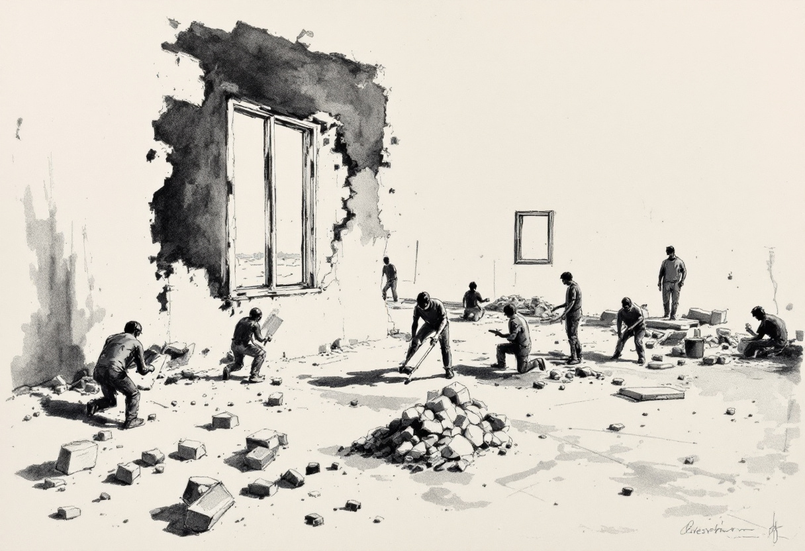
רישוםבונים מחדש רישום, לא תצלום.
ואז מגיע החלק שהופך את כל הסיפור: בליל 5–6 באוקטובר 1946, שישה שבועות בלבד אחרי שהצבא הבריטי סיים לפרק את רוחמה, יצאו ממנה כוחות למבצע 11 הנקודות בנגב — הקמה בו-זמנית של אחת-עשרה נקודות התיישבות ברחבי הנגב בלילה אחד. רוחמה, שזה עתה נהרסה, שימשה נקודת זינוק.
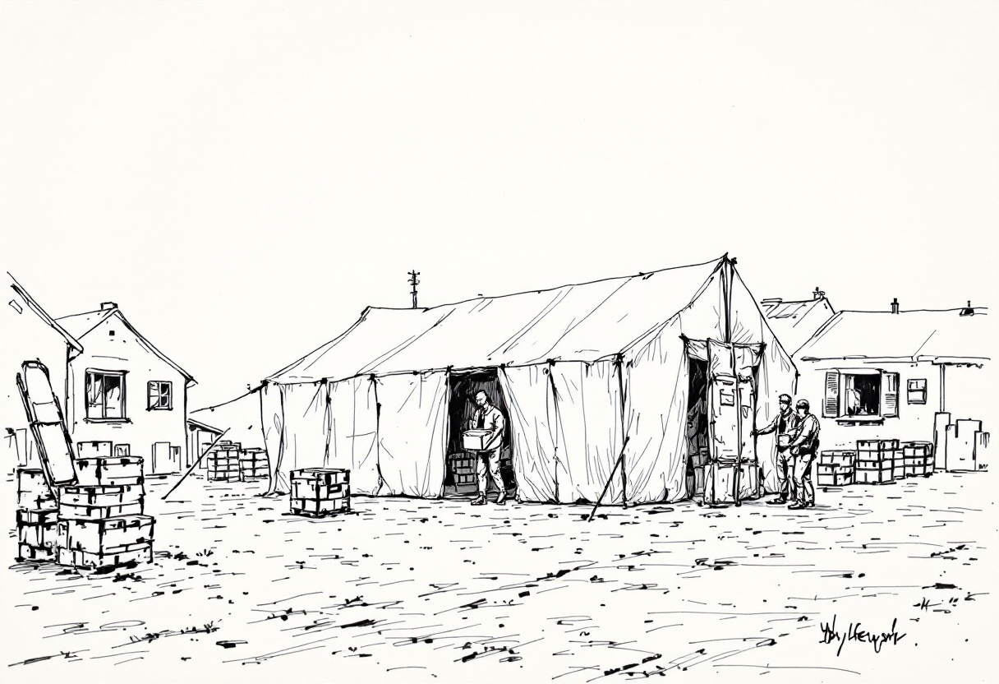
רישוםבית חולים שדה רישום, לא תצלום.
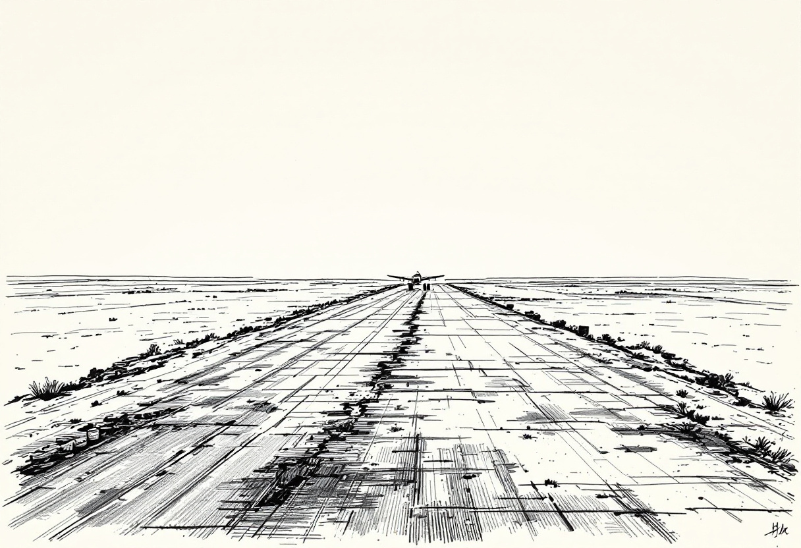
רישוםמנחת בשדה פתוח רישום, לא תצלום.
המבצע הזה הוא שקבע בפועל שהנגב ייכלל בשטח המדינה היהודית בתוכנית החלוקה של האו"ם שנה לאחר מכן. במובן הזה, החיפוש הבריטי ברוחמה נכשל פעמיים: הוא לא מצא את הנשק, והוא לא עצר את ההתיישבות.
1947אחרי הכרזת האו"ם על תוכנית החלוקה, רוחמה הופכת לבסיס לכוחות המגנים על הנגב. מי שאינו כשיר לנשק מפונה.
1948במקום פועלים בית חולים שדה, שדה תעופה לשעת חירום, תחנת קשר ששידרה לכל הנגב ומרכז לוגיסטי. אחרי הפלישה ב-15 במאי, הקיבוץ מופצץ מהאוויר בידי חיל האוויר המצרי. נחפרות תעלות מגן ומקלטים.
1952סוף-סוף נסלל כביש גישה. רוחמה מפסיקה להיות מנותקת.
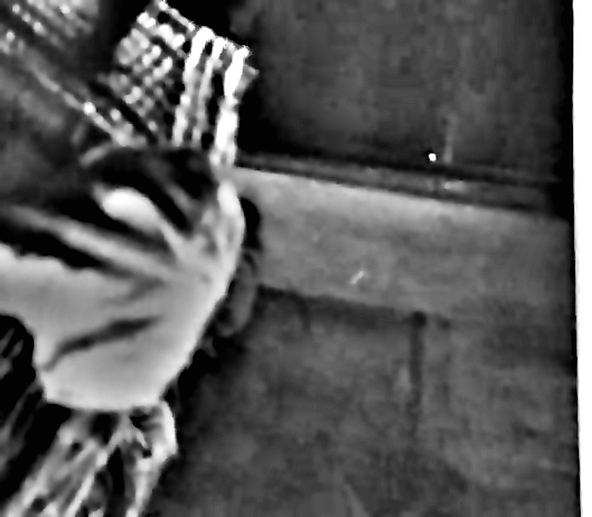
מתחילים לנקות. פרט מוגדל: זוג ידיים, סל קלוע, חדר הרוס. השיקום ארך חודשים והתחיל ככה.
רישוםאוקטובר 1946 — אחת עשרה נקודות בלילה אחד. שישה שבועות אחרי החיפוש, רוחמה היא נקודת זינוק להקמת אחת עשרה נקודות בנגב בלילה אחד. רישום, לא תצלום.
חלק ו · איך לקרואמה התצלומים אומרים ומה לא
מוקרא בקול מסונתז, שנוצר מתיאור כתוב בלבד. אינו קולו של אדם ממשי.
כל התמונות שראיתם כאן עברו מסלול ארוך: מישהו צילם אותן ב-1946; מישהו הדפיס אותן; מישהו הדביק אותן על לוח תערוכה בארכיון הקיבוץ וכתב לידן כיתובים בכתב יד; ובאוגוסט 2026 מישהו צילם את הלוח בטלפון. מה שאתם רואים הוא תצלום של תצלום, ששוחזר דיגיטלית.
לכן כדאי לדעת:
מה שוחזר ומה לא. יישרנו את הפרספקטיבה, איזנו את התאורה, ניקינו אבק ושריטות, הגברנו ניגודיות מקומית והגדלנו פי שניים. שום פרט לא הומצא ושום דבר לא נוסף לתמונה.
הצבע הוא ניחוש. קיימת גם גרסה צבעונית של כל תצלום, שהופקה במודל למידה. הצבעים סבירים — הם לא אמיתיים. אסור לפרסם גרסה צבעונית בלי לומר את זה.
הכיוון הוא לפעמים ניחוש שלנו. באחת-עשרה תמונות סובבנו את הפריים לפי מה שנראה הגיוני. מי שמכיר את הקיבוץ יוכל לתקן.
הצילום הוא צד אחד. אלה תצלומים שצולמו בידי הנצורים כדי לתעד את מה שנעשה להם. הם ראיה — ולא כל הסיפור. תיעוד הצד הבריטי מאותם ימים נמצא בארכיון הלאומי בלונדון וטרם נבדק.
מה עדיין לא ידוע
התאריך המדויק. חלק מהמקורות אומרים 28 באוגוסט ושישה ימים; אחרים אומרים 25 באוגוסט ושבעה ימים. גזיר "משמר" שעל הלוח נושא את הכותרת "יום חמישי למצור" — סריקה נקייה של שורת התאריך שלו תכריע. עד אז, כל תיארוך כאן הוא זהיר.
ועוד: מה בדיוק מסמנים המספרים 68, 941, 67 שעל הלוח; מיהו הקצין וילסון; האם בדורות נמצא נשק; ומה מקורו של הציטוט המיוחס לוויצמן שפותח את הלוח.
"כדי לגלות את נשק המגן תצטרכו לחרוש את כל אדמות ארץ ישראל."
מיוחס לחיים ויצמן — הציטוט שפותח את לוח התערוכה בארכיון קיבוץ רוחמה
28 August – 2 September 1946
Six Days at Ruhama
Two thousand British soldiers took a two-year-old kibbutz in the Negev apart looking for weapons, and found nothing. This is the whole story — where it came from, what exactly happened, and what happened next.
To understand what happened at Ruhama in late August 1946 you need four things first: who governed the country, why Jews were not supposed to be living in the Negev at all, why every kibbutz had weapons hidden in it, and why the British lost patience that particular summer.
Part 1 · BackgroundWho ruled the country, and why it matters
Read by a synthesised voice, generated from a written description. It is no living person's voice.
From 1920 to 1948 Palestine was governed under the British Mandate — an authority granted to Britain by the League of Nations, whose text incorporated the Balfour Declaration's undertaking to facilitate a "national home for the Jewish people." In practice, as the 1930s wore on and Arab opposition hardened, Britain retreated from that undertaking again and again.
DrawingThe British Mandate administration A drawing, not a photograph.
The turning point is the 1939 White Paper. It imposed two restrictions that dictate everything that follows:
Immigration was capped — 75,000 Jews over five years, and after that only with Arab consent. The cap took effect exactly as the Jews of Europe needed somewhere to escape to.
Land purchase was restricted — the 1940 Land Transfer Regulations divided the country into zones. Across most of it, including the entire Negev, transferring land to Jews was prohibited or severely limited.
DrawingA checkpoint on the road A drawing, not a photograph.
What that meant on the ground: the Negev, close to a third of the country, was supposed to stay empty of Jewish settlement. Every settlement founded there was founded against the law, at night, in secret. That is the backdrop to Ruhama's founding — and to British anger at it.
The underground army and the slik
DrawingAn immigrant ship off the coast A drawing, not a photograph.
The Jewish community had an underground defence organisation, the Haganah, and inside it, from 1941, a standing mobilised force: the Palmach. Weapons were illegal, so weapons were hidden. The hiding place was called a slik — a pit, a false wall, a double floor, a grain store, sometimes a whole system outside the settlement fence.
DrawingThe Negev country A drawing, not a photograph.
And here is the logic of the entire story: a kibbutz was simultaneously a farm, an arms depot, and a training base. To the British authorities a kibbutz was not a village; it was a military installation in disguise. To the members, a search was not a police operation; it was an invasion of the home.
Why Ruhama in particular?
Ruhama sits among hills, at the end of a dirt track, with no access road. If you want to shoot, detonate and train without being seen, this is the place. A clandestine camp for Palmach recruits and Haganah commanders was set up in the southern part of the kibbutz, and weapons and explosives were tested in the wadis nearby. Arab villagers in the area heard the explosions and reported them to the British Army. After that it was a matter of time.
Summer 1946: the British lose patience
After the war, with hundreds of thousands of survivors stranded in displaced-persons camps in Europe and Britain refusing to open the gates, the Jewish underground organisations united into the Jewish Resistance Movement and carried out a campaign against British infrastructure. The British response was fast and heavy:
29 June 1946 — "Black Saturday"Operation Agatha: some 17,000 troops and police, mass arrest of the Jewish leadership, searches across settlements. At Kibbutz Yagur a large arms cache was found. Yagur became shorthand — the precedent every kibbutz would now invoke.
22 July 1946The southern wing of the King David Hotel in Jerusalem, headquarters of the British administration, is bombed. 91 people are killed.
30 July – 2 August 1946Operation Shark: cordon and search of Tel Aviv.
Late August 1946The Negev's turn.
Part 2 · The placeThe farm that was abandoned four times
Read by a synthesised voice, generated from a written description. It is no living person's voice.
Ruhama is not the story of one kibbutz. It is the story of a place people tried to settle, over and over.
Drawing1912 — the farm is founded. The She'erit Yisrael society of Moscow Jews arrives on empty land in the northern Negev. A drawing, not a photograph.Drawing1913 — the well. Dug by hand to thirty-eight metres. It is the reason anyone could stay at all. A drawing, not a photograph.
Drawing1917 — the first abandonment. The fighting of the First World War destroys the farm and the settlers are expelled. A drawing, not a photograph.Drawing1936 — the orchards uprooted. In the Arab Revolt the houses are destroyed and the trees torn out. The third abandonment. A drawing, not a photograph.
DrawingDecember 1943 — coming back. The first group from HaAmal goes down to the land, reopens the well and puts up huts. A drawing, not a photograph.Drawing29 March 1944 — at night. British law forbade Jewish settlement in the Negev, so all of it happened in the dark. A drawing, not a photograph.
1911–1913The She'erit Yisrael society of Moscow Jews buys about 5,000 dunam beside the Arab village of Jammama and founds the Ruhama farm — the first modern Jewish settlement on Negev land. The name comes from the prophet Hosea: "I will have mercy upon her that had not obtained mercy." The well is dug in 1913.
1917First World War fighting destroys the farm. The settlers are expelled by the Ottoman authorities.
1929An attempt to rebuild, then the 1929 riots — and a second abandonment.
1932–1936The Gan-Shlomo company buys part of the land and brings Jewish workers to plant orchards. In the Arab Revolt of 1936 the houses are razed and the orchards uprooted. A third abandonment.
1936That same year, at Kiryat Haim, Kibbutz HaAmal is founded — Hashomer Hatzair groups from Poland and Romania, living in a temporary camp and earning their living at Haifa port.
2 December 1943A first group from HaAmal goes down to the Ruhama land. They reopen the well and put up huts.
29 March 1944The formal settlement day. Because British law barred Jewish settlement in the Negev, the whole operation was clandestine: trucks on hidden dirt tracks in the dead of night, and a ceremony that evening.
DrawingThe She'erit Yisrael society, Moscow A drawing, not a photograph.DrawingJamama, the neighbouring village A drawing, not a photograph.DrawingThe first building A drawing, not a photograph.DrawingThe water cart A drawing, not a photograph.DrawingRaising a hut A drawing, not a photograph.
When the British Army arrives in August 1946, this kibbutz is two years and five months old. There is no access road. There is no water pipeline — the well is not enough, so showers are rationed and water is recycled for irrigation. There is a carpentry shop, a metal shop, a garage, and a workshop repairing horse carts on the main road. That is the entire estate.
DrawingTraining in the wadis. For two years they trained here in secret. That is why the British came. A drawing, not a photograph.A building with its roof taken off. The trusses stand out clearly against the light — the whole roof covering has been removed, and a heap of material has come down beneath it. Kibbutz Ruhama Archive, 1946, restored 2026. Orientation corrected in August 2026: until then this print was shown upside down, and described as a landscape.
Part 3 · Six daysWhat happened, day by day
Read by a synthesised voice, generated from a written description. It is no living person's voice.
Before that — 29 June 1946
August was not the first time. Two months earlier, on 29 June 1946, the British mounted Operation Agatha — Black Sabbath: a simultaneous raid on dozens of settlements across the country, searching for arms and arresting thousands. Ruhama was raided that day too.
DrawingThe announcement over the loudspeaker A drawing, not a photograph.
The evidence is a single photograph in the kibbutz archive, captioned: the children of Ruhama, after the search conducted in their children's house. The date is written on it — 29 June 1946.
The children's house, 29 June 1946. The roof is broken open along its whole span — tiles smashed and lifted away in patches, to search the space above the ceiling. Nine or ten small children stand under the eaves in their underwear, in the morning sun. On the ground at left: planks, a pipe and boards that have been pulled out. Kibbutz Ruhama Archive, via Harvard University. Public domain. Photographer unknown.
That changes how the August siege reads. When the troops came the second time, the members knew exactly what was coming — and had already moved the weapons outside the perimeter. The explanation for six days of searching turning up nothing begins here, in June.
DrawingA slik. An arms cache under a floor — precisely what six days of searching was for. At Ruhama they found none. A drawing, not a photograph.DrawingMoving the weapons. After the June search they knew what was coming. The weapons went outside the perimeter before the troops arrived. A drawing, not a photograph.
Day one — the cordon closes
DrawingRadio Jerusalem announces the operation A drawing, not a photograph.
On 28 August 1946 the British Army throws a cordon around two kibbutzim in the western Negev: Ruhama and Dorot. No one in, no one out. The force is put at some two thousand troops, from the 6th Airborne Division — known locally as ha-Kalaniot, "the Anemones," for their red berets. The board in the kibbutz archive names three participating units by their formation numbers: 68, 941, 67. Radio Jerusalem announces the operation the same day.
The newspaper headline put it flatly: "Heavy force lays siege to the farms Ruhama and Dorot. Officially: the operations are aimed at searching for arms."
The sign. In Hebrew: "Disperse at once — otherwise we will open fire," with the same text in Arabic below. A warning sign posted at the besieged settlement. Enlarged detail from a print in the kibbutz archive.
Drawing28 August — the ring closes. Some two thousand troops surround two kibbutzim. No one in, no one out. A drawing, not a photograph.DrawingBreaking the floor. Floors were broken, the ground beneath them dug out, and every mattress slit open. A drawing, not a photograph.
Days two to four — the method
DrawingAssembled in the yard, under guard A drawing, not a photograph.
A British arms search was not rummaging. It had a method, and the photographs document it precisely:
The floors. Smash the paving in every building, because there could be a pit beneath it.
The walls. Dig a trench along the outside of the foundations, because a typical cache is dug hard against a wall.
The buildings. Lever huts and installations off their foundations and dig underneath.
The mattresses. Slit every mattress and pillow, because a pistol can be sewn inside one.
The stores. Tip the contents onto the floor and spread them out.
The floor and the wall. Paving broken, the ground beneath dug out, the supporting beam exposed.The whole structure. An installation lifted off its foundations, the ground beneath it excavated. Nothing was found.
The mattress. Cut open and emptied. This is the action that recurs in every interior photograph.Living quarters, afterwards. Furniture overturned, bedding on the floor, papers scattered.
"Why did you destroy the baking oven? Do the officers not know that you cannot hide weapons in a lit oven?"
From the blue caption cards written by the kibbutz members, on the exhibition board in the archive
DrawingThe tracker dogs. Days before the siege the press ran photographs of tracker dogs the British had brought in to find the caches. These are the dogs Alterman answered. A drawing, not a photograph.
30 August — Alterman answers
On the third day of the siege, while the soldiers were still inside the kibbutz, Nathan Alterman published his column "From the Notes of a Dog" in Davar — one of his Seventh Column pieces. Days earlier the press had run photographs of tracker dogs the British had brought into the country to find the Haganah's arms caches. Alterman answered them in the voice of one of the dogs.
DrawingTrenches along the walls A drawing, not a photograph.
It became one of the most famous columns he ever wrote. The poet Haim Gouri, then 23, quoted it at almost every opportunity for the rest of his life.
Recited by Haim Gouri
"Palmach member and poet Haim Gouri on the days of the struggle against the British, quoting Alterman's From the Notes of a Dog" — Beit HaPalmach. The quotation begins at 0:39.
The event behind the column
DrawingThe dogs in the rooms A drawing, not a photograph.
"The event behind From the Notes of a Dog" — from the Nathan Alterman site, the poet's official heritage channel.
DrawingThe food stores A drawing, not a photograph.
Broken furniture photographs well. What happened to the farm does not. The members' caption cards spell it out:
"The commune hut and its contents were ruined. A heap of soiled clothes, the sewing machines, equipment, utensils, feathers, babies' nappies — the little property we had is no longer usable."
Caption card, Kibbutz Ruhama Archive
And further: haystacks were set alight. Chemical fertiliser was mixed into the food. The seed grain was spoiled. The livestock were scattered. The dining hall and kitchen were wrecked. For a two-year-old kibbutz in the Negev, whose whole existence depends on next season's seed and this winter's food store, that is not property damage — it is an existential threat. During those days, supplies were also blocked from entering the besieged settlements.
The dining hall crockery. Perhaps the most powerful frame in the collection: thousands of plates and cups, smashed and thrown into a single heap. A kibbutz dining hall is not a kitchen — it is where the community physically exists. Kibbutz Ruhama Archive, 1946.
Day five — it reaches the front page
DrawingThe hay burning A drawing, not a photograph.
On the fifth day of the siege the newspaper Mishmar — the Hashomer Hatzair daily, later Al HaMishmar — leads its front page: "Destruction and abuse in the besieged settlements — fifth day of the siege and searches at Ruhama and Dorot." On the same page a British officer named Wilson is quoted declaring Ruhama "the largest arms centre after Yagur."
The comparison to Yagur was not casual. At Yagur, two months earlier, the British search had succeeded. That quotation is a justification issued in advance for what was done at Ruhama — and, in hindsight, it is also the best documentation that the search failed.
Mishmar, day five of the siege. The Hebrew press covered the siege daily.The office files. The kibbutz archive documenting the moment it was itself tipped onto the floor.
DrawingThe dining hall A drawing, not a photograph.
At the same time Golda Meyerson — later Golda Meir, then acting head of the Jewish Agency's political department after the leadership's arrest on Black Saturday — tells foreign journalists at a press conference that the searches are "an invitation to destroy Ruhama for the third time": a direct reference to the site's two earlier abandonments.
The classroom blackboard
Among the photographs in the archive is one that documents no property damage at all. On a classroom blackboard, in chalk, in English: YEHUDI SWINE.
The blackboard. The kibbutz photographed this and kept it — not as an atrocity but as evidence: this is how the search was conducted. Enlarged detail, Kibbutz Ruhama Archive, 1946.
Day six — nothing found
After about six days the force lifts the cordon and leaves. No weapons were found.
The reason is simple: when the members and the fighters learned that the British intended to come in, they made sure to hide the weapons in concealed places away from the kibbutz grounds. The army searched inside the fence. The caches were outside it.
The yard, afterwards. Machinery, beams, crates and tools in a single heap. On the left one of the members stands and looks. Kibbutz Ruhama Archive, 1946.
Part 4 · The peopleThe four people in these photographs
Read by a synthesised voice, generated from a written description. It is no living person's voice.
Notice something odd about this collection: there are almost no human beings in it. Of the 27 historical photographs we could extract from the exhibition board, only four contain a person.
That is not an accident. These pictures were taken as damage documentation — like a legal case file. Whoever held the camera wanted to show what was broken, not who was crying. Which is exactly what makes these four people so valuable.
The woman at the sign. A young woman in a printed dress, hand raised towards the British sign threatening to open fire. She is not fleeing and not protesting — she is reading. This is the only photograph in the collection where a person and the authority appear in the same frame.The woman in the kitchen. In an apron, behind a table loaded with pots and bowls. This is no longer a picture of destruction — it is a picture of repair. Someone has started putting things back.Carrying it out. A person carrying a slit mattress or a woven basket out of the room. The hands in this frame are the most tangible evidence that somebody had to clean this up.The man in the yard. In a shirt and shorts, standing at the edge, looking at the heap. We do not have his name. Somebody reading this probably does.
An open question
We do not have the names of these four people. There are people alive today who know who they are. If you know anyone from Kibbutz Ruhama or from the members' families, this is the most important question to ask before the 80th anniversary.
Part 5 · AfterwardsWhat happened next
Read by a synthesised voice, generated from a written description. It is no living person's voice.
The rebuilding took months. Many buildings were destroyed, property was looted, infrastructure had to be rebuilt. But the members decided to hold on to the place.
DrawingRebuilding A drawing, not a photograph.
And then comes the part that reframes the whole story. On the night of 5–6 October 1946, just six weeks after the British Army finished dismantling Ruhama, forces set out from it for the 11 Points in the Negev operation — eleven settlements established simultaneously across the Negev in a single night. Ruhama, freshly wrecked, served as a launch point.
DrawingA field hospital A drawing, not a photograph.DrawingA landing strip in open country A drawing, not a photograph.
That operation is what effectively established that the Negev would be included in the Jewish state under the UN partition plan a year later. In that sense the British search at Ruhama failed twice over: it did not find the weapons, and it did not stop the settlement.
1947After the UN partition vote, Ruhama becomes a base for the forces defending the Negev. Everyone unfit to bear arms is evacuated.
1948A field hospital, an emergency airstrip, a radio station transmitting across the Negev and a logistics centre operate on site. After the invasion of 15 May the kibbutz is bombed from the air by the Egyptian air force. Defence trenches and shelters are dug.
1952An access road is finally paved. Ruhama stops being cut off.
Starting to clear up. Enlarged detail: a pair of hands, a woven basket, a wrecked room. The rebuilding took months and it started like this.
DrawingOctober 1946 — eleven points in one night. Six weeks after the search, Ruhama is a launch point for eleven new settlements founded across the Negev in a single night. A drawing, not a photograph.
Part 6 · How to read themWhat the photographs say, and what they don't
Read by a synthesised voice, generated from a written description. It is no living person's voice.
Every image here has travelled a long way: somebody photographed it in 1946; somebody printed it; somebody pasted it onto an exhibition board in the kibbutz archive and hand-lettered captions beside it; and in August 2026 somebody photographed that board on a phone. What you are looking at is a photograph of a photograph, digitally restored.
So it is worth knowing:
What was restored and what was not. We corrected the perspective, evened out the lighting, cleaned dust and scratches, raised local contrast and doubled the resolution. No detail was invented and nothing was added to any picture.
The colour is a guess. A colourised version of each photograph also exists, produced by a learning model. The colours are plausible; they are not true. A colourised version must never be published without saying so.
The orientation is sometimes our guess. In eleven images we rotated the frame according to what looked right. Anyone who knows the kibbutz can correct us.
These photographs are one side. They were taken by the besieged, to document what was done to them. They are evidence — not the whole story. The British record of those days sits in the National Archives at Kew and has not yet been examined.
What is still unknown
The exact dates. Some sources say 28 August and six days; others say 25 August and seven. The Mishmar clipping on the board is headed "day five of the siege" — a clean scan of its own date line will settle it. Until then, every date here is provisional.
And also: what exactly the numbers 68, 941, 67 on the board denote; who Officer Wilson was; whether weapons were found at Dorot; and the source of the Weizmann quotation that opens the board.
"To find the defence weapons you would have to plough every acre of the Land of Israel."
Attributed to Chaim Weizmann — the quotation that opens the exhibition board in the Kibbutz Ruhama archive